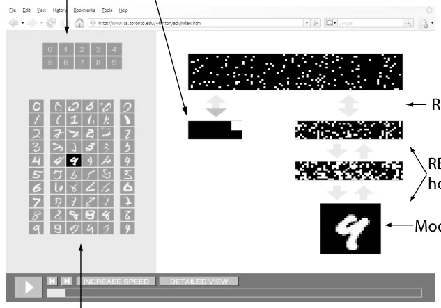
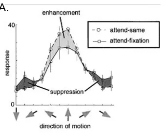

Phần III · Chương 9 — Mạng liên kết hồi quy và trí nhớ phân đoạn
9 Mạng liên kết hồi quy và trí nhớ theo sự kiện
Chương này tiếp tục thảo luận về động lực học của các mạng hồi quy. Tuy nhiên, thay vì sử dụng cấu hình trọng số hồi quy đặc trưng của chương trước, giờ đây chúng ta huấn luyện các mạng trên các mẫu ngẫu nhiên. Chúng ta sẽ chỉ ra rằng những mạng như vậy có thể hoạt động như các bộ nhớ tự liên kết (auto-associative memories), có thể lưu trữ nhanh chóng các mục và có khả năng nhớ lại các mục đã lưu từ thông tin không đầy đủ. Trái ngược với các mô hình DNF vốn có một đa tạp liên tục các điểm hút (gọi tắt là các bộ hút liên tục), các mô hình ở đây có các điểm hút cô lập trong động lực học của chúng. Chúng ta thảo luận về dung lượng lưu trữ của các mạng điểm hút và độ bền vững phi thường của chúng đối với nhiễu và tổn thương. Nhưng trí nhớ cũng có thể sụp đổ nhanh chóng khi mạng bị quá tải hoặc khi tổn thương trở nên quá nghiêm trọng, và chúng ta sẽ nghiên cứu vật lý của những chuyển pha đột ngột sang các pha mất trí nhớ như vậy. Chúng ta cũng sẽ điểm qua các mạng hồi quy có cổng như bộ nhớ ngắn-dài hạn (long short-term memory).
9.1 Mạng tự liên kết và hồi hải mã
9.1.1 Các loại trí nhớ khác nhau
Các từ ‘học tập’ và ‘trí nhớ’ có thể được áp dụng cho nhiều lĩnh vực khác nhau. Chúng ta đã thảo luận về một số loại hình học tập và trí nhớ, và đã đến lúc hệ thống hóa các loại khác nhau dưới một hình thức nào đó. Trong chương trước, chúng ta đã gặp một loại trí nhớ ngắn hạn, thường được các nhà sinh lý học gọi là trí nhớ làm việc (working memory), trong đó các biểu diễn khái niệm dường như được duy trì hoạt động nhờ sự phát xung kéo dài của các nơ-ron. Loại lưu trữ ngắn hạn này rất cần thiết cho nhiều khả năng tinh thần và do đó liên quan đến cái mà các nhà tâm lý học gọi là trí nhớ làm việc. Trong chương trước, chúng ta cũng đã thảo luận về sự hình thành các bản đồ vỏ não, vốn là một dạng học tập và trí nhớ ở thang thời gian phát triển. Loại trí nhớ này là dài hạn, vì các tổ chức đã học được này có thể ổn định trong một thời gian dài. Tuy nhiên, có những khía cạnh khác của việc học tập và trí nhớ mà chúng ta muốn hiểu rõ, chẳng hạn như học các khái niệm, ghi nhớ các sự kiện cụ thể, hoặc học các kỹ năng vận động.
Hình 9.1 cho thấy một bảng phân loại trí nhớ được trích từ bài tổng quan của Larry Squire. Trong sơ đồ này, trí nhớ được phân biệt là trí nhớ tường minh (declarative) hoặc không tường minh (non-declarative). Trí nhớ tường minh là những ký ức rõ ràng như nhớ lại các sự kiện hoặc sự kiện/dữ kiện cụ thể. Nhớ lại các sự kiện cụ thể, chẳng hạn như nhớ những gì bạn đã làm sáng nay, được gọi là trí nhớ theo sự kiện (episodic memory). Ghi nhớ các dữ kiện, chẳng hạn như tên thủ đô của nước Pháp, được gọi là trí nhớ ngữ nghĩa (semantic memory). Trí nhớ không tường minh mang tính ngầm ẩn hơn, bao gồm các khái niệm như học tập và trí nhớ thủ tục và tri giác, điều kiện hóa cổ điển, và học tập không liên kết. Học tập thủ tục bao gồm học các kỹ năng vận động, như cách đi xe đạp, hoặc các kỹ năng xã hội, như học cách hòa nhập trong một nhóm. Học tập tri giác bao gồm sự hình thành các bản đồ vỏ não, có liên quan đến hiệu ứng mồi (priming) trong
Fundamentals of Computational Neuroscience. Third edition. Thomas P. Trappenberg, Oxford University Press. © Oxford University Press 2023. DOI:10.1093/oso/9780192869364.003.0009 tài liệu tâm lý học. Điều kiện hóa cổ điển, chẳng hạn như phản ứng nháy mắt trước tiếng chuông khi tiếng chuông trước đó được kết hợp với một luồng khí thổi vào mắt, là một cơ chế thích nghi phổ biến khác trong não. Chúng ta sẽ thảo luận chủ đề này cùng với học tập phần thưởng trong Chương 10. Tất cả các dạng trí nhớ này đều có thể liên quan đến các cơ chế liên kết kiểu Hebb. Nhóm cuối cùng bao gồm các trí nhớ không liên kết, chẳng hạn như các phản xạ.
Trí nhớ
Tường minh
Không tường minh
Thủ tục Tri giác Điều kiện hóa Không liên kết
Ngữ nghĩa (Dữ kiện) Theo sự kiện (Sự kiện)
Các đường phản xạ
Vỏ não mới Hạch hạnh nhân Tiểu não Hạch nền
Hạch nền Vỏ não vận động Tiểu não
Hồi hải mã (MTL) Vỏ não mới
Hình 9.1 Phác thảo sơ đồ phân loại trí nhớ [phỏng theo Squire, Neurobiology of Learning and Memory 82: 171–7 (2004)].
Hình 9.1 bao gồm ở phía dưới một số ví dụ về các vùng não trong hệ thần kinh đã được liên kết với các khái niệm trí nhớ như vậy. Điều kiện hóa đã được liên kết với nhiều vùng não. Ví dụ, các phản ứng cảm xúc ngầm ẩn, như nỗi sợ hãi, được liên kết với hạch hạnh nhân (amygdala), và tiểu não đã được chứng minh là tham gia vào điều kiện hóa nháy mắt. Chúng ta sẽ thảo luận cụ thể về học tập phần thưởng trong hạch nền ở chương tiếp theo. Sự hình thành hoặc tái tổ chức các bản đồ vỏ não là một ví dụ về học tập tri giác, và học tập thủ tục đã được liên kết với vỏ não vận động, hạch nền, và tiểu não, cùng một số vùng khác. Điều thú vị là một vùng rất đặc biệt gọi là hồi hải mã (hippocampus), cùng với các vùng lân cận ở thùy thái dương giữa (MTL), thường xuyên được liên kết với trí nhớ tường minh. Vùng này đặc biệt được quan tâm trong cuộc thảo luận ở chương này. Mặc dù chúng ta sẽ thảo luận về hồi hải mã như một ví dụ, điều quan trọng cần ghi nhớ là các mô hình trong chương này mang tính tổng quát hơn và vùng này chắc chắn không phải là vùng não duy nhất tham gia vào trí nhớ tường minh. Trí nhớ tường minh phụ thuộc rất nhiều vào các quá trình vỏ não, và đóng góp chính xác của hồi hải mã trong các dạng trí nhớ tường minh khác nhau vẫn đang là chủ đề tranh luận sôi nổi.
Trước khi đi sâu hơn vào các mô hình trí nhớ tường minh, chúng ta sẽ đối chiếu điều này với Chương 7, nơi chúng ta đã thảo luận về nhận dạng đối tượng trong bối cảnh học tập thống kê. Các mạng trong chương đó nhằm mục đích học cách trích xuất các xu hướng trung tâm để cho phép tổng quát hóa sang dữ liệu chưa từng thấy. Việc ghi nhớ các trường hợp đơn lẻ gây hại vì chúng dẫn đến quá khớp (overfitting). Mặc dù những loại hình học tập như vậy rất quan trọng trong não và có khả năng hiện diện trong một số dạng trí nhớ ngữ nghĩa, chúng ta tập trung out j w ji r
Hình 9.2 Một mạng tự liên kết bao gồm các nút liên kết không chỉ nhận đầu vào bên ngoài từ các lớp nơ-ron khác mà còn có nhiều kết nối nhánh bên hồi quy giữa các nút trong lớp nơ-ron.
ở đây vào việc học các trường hợp cụ thể và các cơ chế liên kết, như đã thảo luận trong Chương 6.
Mạng nguyên lý được xem xét trong chương này được thể hiện trong Hình 9.2, vốn có cùng kiểu cấu trúc mạng hồi quy như các mạng trong chương trước. Điểm khác biệt duy nhất giữa bộ nhớ tự liên kết được thảo luận trong chương này và mô hình DNF được thảo luận trong Chương 8 là mạng được huấn luyện trên một tập mẫu khác. Trong khi các mô hình DNF được huấn luyện có hệ thống trên tất cả các đặc trưng có thể có để biểu diễn trong bản đồ, các mạng trong chương này sẽ được huấn luyện trên các mẫu riêng biệt, chủ yếu là các mẫu ngẫu nhiên để minh họa khả năng của chúng. Chúng ta sẽ thấy rằng điều này dẫn đến các điểm hút tách biệt rõ ràng trong các mạng này, trong khi mô hình DNF có một đa tạp liên tục các điểm hút. Do đó, các mô hình ở đây được gọi là mạng nơ-ron điểm hút (PANNs), hay đơn giản là mạng nơ-ron bộ hút (ANNs), trái ngược với mạng nơ-ron bộ hút liên tục (CANNs) của Chương 8.
Mô hình trong Hình 9.2 tương tự như mạng liên kết được thể hiện ở Hình 6.2, ngoại trừ việc đầu vào của mỗi nút được hồi tiếp trở lại tất cả các nút khác trong mạng. Bằng cách này, chúng ta có thể liên kết một mẫu với chính nó. Do đó, các mạng như vậy cũng được gọi là bộ tự liên kết (autoassociator), mặc dù có thể hiện thực hóa một bộ nhớ tự liên kết dưới dạng kiến trúc truyền thẳng gọi là bộ tự mã hóa (auto-encoders). Trong chương này, chúng ta đặc biệt quan tâm đến các mạng hồi quy, và chúng ta sẽ sử dụng thuật ngữ mạng tự liên kết đồng nghĩa với dạng cụ thể của một mạng hồi quy.
Các chiếu ngược (back-projections) trong mạng liên kết này đưa các đặc tính hấp dẫn vào mô hình. Như đã thấy, các bộ liên kết có khả năng thực hiện một dạng hoàn thành mẫu (pattern completion). Sau khi một mẫu đầu vào bên ngoài được đưa vào mạng, mạng sẽ phản hồi bằng một mẫu đầu ra gần giống với một mẫu đã huấn luyện hơn khi áp dụng học tập Hebb. Phản hồi này sau đó được đưa ngược lại làm đầu vào cho chính mạng đó, để mạng phản hồi bằng một mẫu lại càng gần hơn với một mẫu đã học. Do đó, chúng ta kỳ vọng rằng việc lặp vòng trong một mạng hồi quy có thể tăng cường khả năng hoàn thành mẫu của các nút liên kết một bước đơn giản. Quá trình động lực học làm thay đổi các phản hồi trong mạng hồi quy sẽ dừng lại khi đạt được một mẫu đầu ra đã học
CA3
DG
CA1
SB
EC
Hình 9.3 Phác thảo sơ đồ thùy thái dương giữa với một số kết nối được đề cập trong văn bản. Một số vùng được chỉ định bằng các chữ viết tắt bao gồm vỏ não khứu trong (EC), hồi răng (DG), phân vùng hồi hải mã sừng Ammon (CA), và vùng dưới chân hải mã (SB).
.
Như chúng ta đã thấy trong Chương 8, một trạng thái hút như vậy tiếp tục duy trì hoạt động cho đến khi một mẫu khác được áp dụng cho mạng. Tuy nhiên, trí nhớ làm việc sẽ không phải là trọng tâm chính của các cuộc thảo luận ở đây. Ngoài ra, mặc dù chúng ta sẽ nói về các trạng thái tiệm cận và trạng thái dừng trong chương này vốn có vẻ trái ngược với hoạt động tinh thần liên tục, điều này không nên được xem là lý lẽ để bác bỏ các mô hình như vậy vì đây chỉ là một cách thuận tiện để mô tả hệ thống về mặt toán học. Các trạng thái như vậy nhằm mô tả một số lực trong hệ thống trong bức tranh lớn hơn của một hệ thống với các lần lặp liên tục. Chúng ta sẽ thấy rằng một số hệ thống có thể tiến gần đến các trạng thái tiệm cận chỉ trong vài lần lặp.
9.1.2 Hồi hải mã và trí nhớ theo sự kiện
Các mô hình được thảo luận trong chương này đã được gắn với các chức năng hồi hải mã kể từ khi một lý thuyết về vỏ não cổ (archicortex) được David Marr đề xuất vào năm 1976. Phần vỏ não cổ hơn về mặt phát sinh loài này là một phần của thùy thái dương giữa và được minh họa trong Hình 9.3 bằng một lát cắt vành (coronal section). Cấu trúc này được gọi là hồi hải mã (hippocampus) vì hình dạng giống con cá ngựa, và một số phân vùng của nó được dán nhãn CA cho cornus ammonis theo tên vị thần đầu cừu Ai Cập. Đây chính là cấu trúc nơi Bliss và Lomø phát hiện ra LTP và là vùng chính được khảo sát trong nghiên cứu về tính dẻo như đã đề cập ở Chương 6. Ngoài ra, chúng ta đã đề cập đến các trường vị trí (place fields) trong Chương 8, thường được ghi nhận ở hồi hải mã của loài gặm nhấm, cũng như các tế bào hướng đầu (head-direction cells), thường được ghi nhận từ vùng dưới chân hải mã (subiculum) lân cận.
Hồi hải mã đã được gắn với việc tiếp thu trí nhớ theo sự kiện kể từ trường hợp nổi tiếng của bệnh nhân HM. Ở bệnh nhân này, phần lớn cả hai thùy thái dương giữa đã bị cắt bỏ để điều trị chứng động kinh. Sau đó, ông mắc một dạng mất trí nhớ đặc trưng bởi việc không thể hình thành các ký ức dài hạn mới về các sự kiện. Ngược lại, trí nhớ dài hạn đã thu nhận được trước khi cắt bỏ cấu trúc này không bị suy giảm. Tuy nhiên, ông vẫn có thể học các kỹ năng vận động mới và thậm chí tiếp thu một số trí nhớ ngữ nghĩa mới. Tình trạng này được gọi là chứng mất trí nhớ ngược chiều (retrograde amnesia). Sự tham gia chính xác của hồi hải mã trong việc tiếp thu và gợi nhớ trí nhớ vẫn đang được tranh luận gay gắt, nhưng có vẻ như hồi hải mã có thể lưu trữ nhanh chóng ký nhớ về các sự kiện mà sau này có thể được củng cố với kho lưu trữ thông tin ở vỏ não mới.
Hồi hải mã dường như thích nghi một cách phi thường cho việc lưu trữ nhanh chóng các sự kiện phức tạp. Đầu vào đến hồi hải mã chủ yếu đến từ vỏ não khứu trong (EC), nơi nhận đầu vào từ nhiều vùng vỏ não. Mã hóa trong các vùng này, đặc biệt là ở hồi răng (DG), rất thưa thớt, và chúng ta sẽ thảo luận sau về cách điều này giúp giảm thiểu sự nhiễu loạn với các ký ức khác. DG cũng là nơi mà sự sinh mới tế bào thần kinh (neurogenesis), tức việc tạo ra các tế bào nơ-ron mới trong suốt cuộc đời của một sinh vật, đã được xác lập. Có hai con đường chính đến phân vùng CA3, một con đường chiếu đến DG trước, và một con đường khác đi xuyên qua DG, gọi là con đường xuyên (perforant pathway). Vùng CA3 có nhiều kết nối nhánh bên tiếp xúc với các tế bào khác trong CA3 và CA1. Những nhánh bên phong phú này, đặc biệt là trong CA3, đã truyền cảm hứng phần lớn cho việc nghiên cứu các mạng hồi quy có dạng như Hình 9.2. CA1 chiếu ngược trở lại EC, nhưng EC cũng có các chiếu trực tiếp đến CA1. Có khả năng một số con đường hoạt động ưu thế trong pha lưu trữ hoặc pha truy xuất, như sẽ được thảo luận thêm dưới đây.
Các mô hình cơ bản được thảo luận tiếp theo trong phần này chỉ nắm bắt một số khía cạnh của quá trình xử lý ở hồi hải mã, đáng chú ý nhất là khả năng lưu trữ các sự kiện cụ thể trong các mạng tự liên kết. Mặc dù các mô hình như vậy nắm bắt một khả năng quan trọng của mạng, đó là hình thành trí nhớ liên kết trong các mạng hồi quy, hiện nay đã có nhiều đề xuất chi tiết hơn nhiều về các chức năng của hồi hải mã liên quan đến xử lý chuỗi, phát hiện tính mới, củng cố trí nhớ, và các chức năng khác. Nhưng mô hình cơ bản là một cột mốc quan trọng trong khoa học thần kinh tính toán.
9.1.3 Pha học tập và pha truy xuất
Trước khi phác thảo chi tiết hơn về khả năng ghi nhớ của các mạng liên kết hồi quy, chúng ta phải đề cập đến một khó khăn xảy ra khi kết hợp các cơ chế liên kết Hebb với tính hồi quy trong mạng. Học tập liên kết phụ thuộc cốt yếu vào việc liên hệ hoạt động tiền synap với hoạt động hậu synap vốn được áp đặt bởi một kích thích không điều kiện. Tuy nhiên, mạng hồi quy sẽ nhanh chóng kéo hoạt động hậu synap này ra khỏi mẫu hoạt động mà chúng ta muốn khắc ghi nếu động lực học của mạng hồi quy chiếm ưu thế. Một giải pháp cho vấn đề này là chia hoạt động của mạng thành hai pha, một pha huấn luyện và một pha truy xuất. Các pha này có thể được xen kẽ nhau.
Có một số đề xuất về cách thức chuyển đổi giữa pha học tập và pha truy xuất có thể được thực hiện trong hồi hải mã. Ví dụ, các sợi rêu (mossy fibres) từ các tế bào hạt trong DG cung cấp các đầu vào mạnh mẽ đến các nơ-ron CA3 với các synap lớn nhất được tìm thấy trong não động vật có vú, mà David Marr gọi là các synap kích nổ (detonator synapses). Do đó, các mẫu phát xung của CA3 có thể bị chi phối bởi con đường này trong pha học tập. Ngược lại, con đường xuyên có thể kích thích các nơ-ron CA3 trong pha truy xuất, nơi các nhánh bên CA3 và các chiếu CA3–CA1 có thể giúp hoàn thành các mẫu từ các đầu vào không đầy đủ. Khả năng này cũng có thể được hỗ trợ bởi các loại synap khác nhau và khoảng cách của chúng tới thân tế bào.
Một đề xuất khác, được Michael Hasselmo nghiên cứu, là các tác nhân hóa học, như acetylcholine (ACh) và noradrenaline (còn gọi là norepinephrine), có thể điều biến việc học tập và qua đó cho phép chuyển đổi giữa pha truy xuất và pha học tập.
Người ta đã chứng minh rằng các chất điều biến thần kinh như vậy tạo điều kiện cho tính dẻo synap và sự hiện diện của chúng làm tăng cường sự phát xung của các nơ-ron. Đồng thời, các chất điều biến thần kinh ức chế sự truyền dẫn synap kích thích, điều này sau đó có thể kìm hãm tác động của các nhánh bên hồi quy. Do đó, các nơ-ron chủ yếu phản ứng với đầu vào bên ngoài hệ thống, phản ánh đúng đề xuất về pha học tập mà chúng ta sẽ áp dụng chung trong các mô hình sau đây.
Ngay cả khi ACh không chịu trách nhiệm trực tiếp cho việc chuyển đổi giữa các pha học tập và truy xuất trong hồi hải mã, ai cũng biết rõ rằng chất hóa học này rất quan trọng với tư cách là chất điều biến tính dẻo trên khắp vỏ não. Việc chuyển đổi giữa pha học tập và pha truy xuất cũng có thể cần thiết cho việc chuyển giao các trí nhớ trung hạn được lưu trữ trong hồi hải mã sang các kho lưu trữ trí nhớ dài hạn ở các vùng vỏ não khác. Điều này có thể xảy ra trong khi ngủ, và các dao động của ACh trong khi ngủ đã được phát hiện. Có nhiều câu hỏi thú vị hơn nữa, chẳng hạn như việc kiểm soát sự điều biến thần kinh và thang thời gian của việc chuyển đổi giữa học tập và truy xuất, cần được nghiên cứu thêm.
9.2 Mạng nơ-ron điểm hút (ANN)
Nhiều nhà nghiên cứu đã suy đoán về tầm quan trọng của các kết nối hồi tiếp trong các mạng lưới não bộ. Grossberg là một trong những người đầu tiên đề xuất, phân tích, và phổ biến các mạng như vậy liên quan đến các quá trình não bộ, từ cuối những năm 1950. Những người tiên phong quan trọng khác bao gồm Caianiello, Longuet-Higgins, Willshaw, Edelman, Amari, và Kohonen, cùng nhiều người khác. Để xem một tuyển tập hay các bài báo sơ khai, hãy xem Shaw và Palm, Brain theory, ấn bản tiền in, World Scientific (1988). John Hopfield đã phổ biến các mạng này trong giới vật lý vào đầu những năm 1980. Phần lớn nội dung sau đây dựa trên công trình của Amit, Gutfreund, và Sompolinsky. Bây giờ chúng ta sẽ thảo luận về các trạng thái hút, vì chúng chi phối sự tiến hóa theo thời gian của các hệ động lực được thảo luận ở đây, ít nhất là về mặt tiệm cận. Vì có thể mất một khoảng thời gian đáng kể để hệ thống tiến gần đến các trạng thái như vậy, tính liên quan của các trạng thái đó đối với các quá trình não bộ từng bị đặt nghi vấn. Tuy nhiên, chúng ta sẽ thấy rằng các trạng thái hút đạt được khá nhanh trong hầu hết các tình huống được thảo luận ở đây. Ngoài ra, não bộ không cần thiết phải ổn định hoàn toàn vào các trạng thái hút. Thay vào đó, con đường nhanh chóng hướng tới các trạng thái hút có thể là đủ để sử dụng chúng làm bộ nhớ liên kết. Mặc dù điều này phù hợp hơn nhiều với các yêu cầu xử lý thời gian thực của các chức năng não bộ, chúng ta thảo luận về các trạng thái hút để phân tích các chế độ động lực học của mạng.
9.2.1 Động lực học mạng và huấn luyện
Quy tắc động lực học của ANN giống với quy tắc được đề cập trong Chương 8, mặc dù một mô tả với các nút riêng lẻ phù hợp hơn để sử dụng ở đây. Do đó, chúng ta sử dụng phiên bản rời rạc (pt 8.1) với các đầu vào bên ngoài như trong pt 8.6, τ dui(t)
dt = −ui(t) + 1
X
wijrj(t) + Iext i (t) (9.1)
N
j ri = g(ui), (9.2)
và quy tắc hiệp phương sai Hebb để học Np mẫu với các thành phần rµ i cho mẫu µ. Khi bắt đầu quy tắc này với một ma trận trọng số toàn số không và sử dụng tốc độ học ϵ (xem thêm Mục 6.4.2, pt 6.23), chúng ta có thể viết ma trận trọng số thu được là
Np X
(rµ i −⟨ri⟩)(rµ j −⟨rj⟩) −ci. (9.3)
wij = ϵ µ=1
Qua đó chúng ta đã đưa vào một hằng số ức chế, ci cho mỗi nút nhận, tương tự như sự ức chế bổ sung được sử dụng trong Chương 8. Các dấu ngoặc nhọn biểu thị giá trị kỳ vọng như đã dùng trước đây. Chương này chủ yếu xem xét việc huấn luyện các mẫu nhị phân. Để giữ ký hiệu nhất quán với chương trước, chúng ta bắt đầu với các biểu diễn rµ i ∈{0, 1}, đối với chúng một hàm kích hoạt ngưỡng,
1 nếu ui > θ ri = Θ(ui; θ) =
0 nếu khác , (9.4)
là phù hợp. Lưu ý rằng các giá trị mẫu, trái ngược với các giá trị trạng thái của mạng, được ký hiệu bằng chỉ số trên cho các số thứ tự mẫu khác nhau.
Tài liệu về ANN thường sử dụng các mẫu với biểu diễn sµ
i ∈{−1, 1}, trong đó chữ s được dùng để ám chỉ sự tương đồng với các mô hình spin, được thảo luận thêm bên dưới. Biểu diễn này được sử dụng cho phần lớn các cuộc thảo luận trong chương này. Tất nhiên, các lập luận rút ra ở đây không nên phụ thuộc vào biểu diễn, vì vậy cần cẩn trọng để chuyển đổi chính xác giữa các ký hiệu. Để chuyển đổi các tần số r ∈{0, 1} sang spin s ∈{−1, 1}, chúng ta chỉ cần nhân các giá trị tần số với 2 và trừ đi 1, s = 2r −1. Do đó, để biến đổi các pt 9.1–9.3 sang biểu diễn s, người ta chỉ cần sử dụng các phép thế ri = 1
2(si + 1), ui = 1 2(us i + 1). (9.5)
Thay thế các biến tần số bằng các biến spin cho ta
τ dus i(t) dt = −us i(t) + 1
X
X
wij + 2Iext i (t) −1, (9.6)
wijsj +
N
j j si = gs(us i) = sign(us i −2θ + 1), (9.7)
trong đó hàm kích hoạt giờ đây là hàm dấu (sign) với một ngưỡng được điều chỉnh phù hợp. Các giá trị trọng số, khi được biểu diễn bằng các mẫu trong biểu diễn s, là
Np X
wij = ϵ1 (sµ i −⟨si⟩)(sµ j −⟨sj⟩) −ci, (9.8)
4 µ=1 có cùng dạng như trong biểu diễn r, nhưng có sự điều chỉnh ở tốc độ học.
Trái ngược với chương trước, ở đây chúng ta chủ yếu quan tâm đến các trạng thái dừng như là các trạng thái trí nhớ. Trạng thái dừng là các trạng thái không thay đổi dưới động lực học của hệ thống, do đó được đánh dấu bởi dus i/dt = 0. Các phương trình động lực học j wij +2Iext trở nên đơn giản trong trường hợp P i (t) = 1 khi sử dụng ngưỡng θ = 0.5. Các trạng thái dừng khi đó là các điểm bất động (fixpoints) của hệ rời rạc,
X si(t + 1) = sign wijsj(t)
(9.9)
j trong đó chúng ta đã áp dụng hàm kích hoạt cho cả hai vế của phương trình trạng thái dừng. Trước hết chúng ta thảo luận trường hợp ci = 0. Cả mô hình thời gian liên tục (pt 9.6 và 9.7), và mô hình điểm bất động rời rạc (pt 9.9) đều có thể minh họa các đặc trưng tiệm cận của hệ thống với ma trận trọng số pt 9.8. Chỉ khi chúng ta quan tâm đến động lực học đáp ứng quá độ của mô hình, ví dụ như khi mô hình hóa thời gian phản ứng của hệ thống, chúng ta mới phải sử dụng các phương trình liên tục.
Các mô hình bộ hút có thể được xem xét trong bối cảnh xác suất, hoặc với đầu vào nền ngẫu nhiên, trọng số nhiễu, hoặc truyền dẫn xác suất. Chúng ta thường nói đơn giản là nhiễu trong bối cảnh này, mặc dù cần hiểu rõ rằng mô tả xác suất này có thể còn hơn là chỉ những tác động môi trường không mong muốn. Một mô hình nhiễu phổ biến được sử dụng cho các kết quả trình bày sau này là quy tắc cập nhật xác suất, thay thế hàm kích hoạt tất định (pt 9.9)
X wijsj(t −1)
si(t) = sign
(9.10)
j bằng một phiên bản xác suất
P(si(t) = +1) = 1 1 + exp(−2 P j wijsj(t −1)/T). (9.11)
Mô hình nhiễu này tương ứng với thống kê Boltzmann trong các hệ nhiệt động lực học, và tham số nhiễu T do đó đôi khi được gọi là nhiệt độ. Hàm dấu được khôi phục lại trong giới hạn T →0 (xem bài tập).
Kết luận chính của chương này là các mạng động lực học, như được giới thiệu trong phần này, có thể hoạt động như một thiết bị bộ nhớ tự liên kết. Điều này được minh họa cho mô hình điểm bất động và mô hình thời gian liên tục trong Hình 9.4. Cả hai mạng ban đầu được huấn luyện trên 10 mẫu ngẫu nhiên. Mô hình điểm bất động (Hình 9.4A) sau đó được khởi tạo với một mẫu ngẫu nhiên, và một phiên bản nhiễu của một mẫu được sử dụng làm đầu vào bên ngoài cho đến t = 10τ đối với mô hình thời gian liên tục. Cả hai đồ thị đều cho thấy tích vô hướng chuẩn hóa, được gọi là độ chồng lấp (overlap) trong các đồ thị này, giữa các trạng thái mạng với từng mẫu đã lưu trong khi cập nhật mạng. Tích vô hướng chuẩn hóa đo cosin của góc giữa hai vectơ và do đó bằng một nếu hai vectơ hướng cùng chiều và bằng không khi chúng vuông góc. Trong hình, một trong các đường tiến tới một, cho thấy một mẫu đã được truy xuất. Mô phỏng với mô hình liên tục minh họa sự phục hồi của một ký ức (bị nhiễu) vì chúng ta đã sử dụng một trạng thái nhiễu như vậy làm mẫu đầu vào cho đến t = 10τ. Chúng ta cho thấy trong hình này một trường hợp đặc biệt thú vị trong đó hai mẫu cạnh tranh nhau trong một khoảng thời gian trước khi mẫu lưu trữ đúng được truy xuất. Các mô phỏng trong trường hợp rời rạc được bắt đầu với một mẫu ngẫu nhiên và chứng minh rằng một trong các mẫu đã lưu đã được truy xuất. Cả hai mô phỏng cũng minh họa trí nhớ làm việc với sự phát xung duy trì sau khi loại bỏ đầu vào bên ngoài.
1 A. Mô hình ANN điểm bất động B. Mô hình ANN thời gian liên tục
1
0.5
0.5
Độ chồng lấp
Độ chồng lấp
0
0
-0.5
-0.5
0 10 5 0 20 10
Số lần lặp Thời gian [ τ]
Hình 9.4 Ví dụ về kết quả từ các mô phỏng của các mô hình ANN. (A) Mô phỏng mô hình điểm bất động với chương trình ann fixpoint.m. Độ chồng lấp ở đây là tích vô hướng chuẩn hóa của các trạng thái mạng trong quá trình cập nhật với tất cả 10 mẫu đã được khắc ghi bằng học tập Hebb vào mạng. Mạng được khởi tạo ngẫu nhiên, và một trong các mẫu đã lưu đã được truy xuất. (B) Mô phỏng phiên bản thời gian liên tục của mạng bộ hút với chương trình ann cont.m. Một phiên bản nhiễu của một mẫu đã lưu được áp dụng làm đầu vào bên ngoài cho đến t = 10τ.
Để minh họa bộ nhớ liên kết, chúng ta chạy một thí nghiệm nhỏ với các nơ-ron nhị phân. Chúng ta chọn biểu diễn hai trạng thái này là −1 và 1. Chúng ta có thể dễ dàng biến đổi mạng sang các biểu diễn trạng thái khác, nhưng hóa ra biểu diễn này giúp cho chương trình sau đây gọn gàng hơn. Chúng ta sử dụng các đơn vị ngưỡng cứng trong ví dụ này với ‘quy tắc cập nhật’
s(t + 1) = sign(ws(t −1)). (9.12)
Hàm dấu trả về −1 nếu đối số nhỏ hơn không và ngược lại trả về 1. Đây chỉ là một phiên bản khác của một perceptron ngưỡng. Bây giờ chúng ta muốn lưu trữ một số mẫu xµ trong mạng này. Phần mới ở đây là cách chúng ta huấn luyện mạng này. Chúng ta sử dụng ở đây
X
xx′ (9.13)
Quy tắc Hebb: w =
µ
Quy tắc này có một lịch sử lâu đời. Nó được Donald O. Hebb đề xuất bằng lời vào những năm 1940 và được Eduardo R. Caianiello hình thức hóa vào năm 1961. Quy tắc này về cơ bản quy định rằng kết nối giữa hai nơ-ron tăng lên nếu cả hai nơ-ron đều hoạt động (s=1) và giảm đi trong trường hợp khác. Một chương trình mô phỏng mạng gồm 500 nút lưu trữ 10 mẫu ngẫu nhiên được đưa ra trong chương trình Hopfield.py.
Programs/Hopfield.py 1 import numpy as np 2 import m a t p l o t l i b . pyplot as p l t 3 4 pat =2∗np . random . r a n d i n t (2 , s i z e =(500 ,10)) −1 #Rand binary p a t t e r n 5 w=pat@pat . T # Hebbian l e a r n i n g 6 s = pat +10∗np . random . randn (500 ,10) # I n i t i a l i z e network 7 f o r t in range ( 1 0 ) : s [ : , t ]= np . sign (w@s[ : , t −1]) # Update network 8 p l t . p l o t ( s . T@pat /500) # p l o t o v e r l a p s
Hình 9.4 cho thấy kết quả của mô phỏng này bằng cách hiển thị độ chồng lấp giữa các trạng thái mạng và các vectơ biểu diễn mười mẫu ngẫu nhiên. Giá trị của độ chồng lấp này là 1 nếu hai vectơ giống nhau, là −1 nếu tất cả các đặc trưng bị đảo ngược, và trung bình bằng 0 đối với các quan hệ ngẫu nhiên. Sau khi huấn luyện, mạng được khởi chạy trên một đầu vào ngẫu nhiên. Mặc dù độ chồng lấp giữa mạng và mẫu đã lưu ban đầu không tốt, chúng ta có thể thấy một mẫu được gợi nhớ hoàn hảo (độ chồng lấp = 1). Đôi khi chương trình sẽ cho kết quả độ chồng lấp là −1 hoặc một cấu hình nào đó khác, và lát nữa sẽ rõ lý do tại sao điều này có thể xảy ra. Điểm quan trọng ở đây là chúng ta đã chỉ ra rằng các mẫu đã lưu là các điểm bất động dưới động lực học của mạng. Điều thú vị là độ chồng lấp bằng −1 cho thấy phần đảo ngược của mẫu cũng là một điểm bất động dưới động lực học của mạng.
9.2.2 Phân tích tỷ lệ tín hiệu trên nhiễu ⋄
Có thể nghiên cứu khả năng gợi nhớ của các mạng điểm bất động một cách hình thức hơn. Trạng thái của mạng tại mỗi bước thời gian liên tiếp được cho bởi động lực học rời rạc, pt 9.9, trong đó có thể đưa ma trận trọng số được huấn luyện theo Hebb vào, si(t + 1) = sign[ 1 sµ i sµ
X
X
j sj(t)]. (9.14)
N
µ j
Hãy kiểm tra mạng khi được khởi tạo với một trong các mẫu đã huấn luyện. Không mất tính tổng quát, chúng ta có thể chọn µ = 1 để minh họa. Khi đó sẽ rất hữu ích nếu tách các số hạng trong tổng theo µ thành một số hạng cho mẫu huấn luyện đầu tiên và một số hạng thứ hai với phần còn lại của các mẫu huấn luyện,
Npat X
si(t + 1) = sign[ 1 jsj(t) + 1 sµ i sµ
X
X
N s1
s1 j sj(t)]. (9.15)
i
N
µ=2 j j
Biểu thức s1
jsj(t) trong số hạng đầu tiên được đơn giản hóa đối với điều kiện ban đầu sj(t) = s1 j. Tích này luôn bằng một với lựa chọn mẫu huấn luyện này (hoặc 12 hoặc (−1)2), và tổng của các số một này triệt tiêu hệ số chuẩn hóa N. Khi đó ta thu được biểu thức
Npat X
si(t + 1) = sign[si(t) + 1 sµ i sµ
X
j sj(t)]. (9.16)
N
µ=2 j
Chúng ta muốn mạng giữ nguyên trạng thái dừng đối với mẫu đã huấn luyện, và số hạng đầu tiên thực sự hướng đúng chiều. Chúng ta gọi số hạng này là phần ‘tín hiệu’, vì đây là phần mà chúng ta muốn khôi phục sau các lần cập nhật của mạng. Số hạng 1
PNpat
µ=2 sµ i sµ j s1
P
j mô tả ảnh hưởng của các mẫu đã lưu khác lên trạng thái của mạng, và được gọi là số hạng nhiễu chéo (cross-talk term). Số hạng nhiễu chéo này được cho là tương tự với sự nhiễu loạn giữa các ký ức tương tự nhau trong một hệ thống trí nhớ sinh học. Nhiễu chéo trong phân tích hình thức của chúng ta là một biến ngẫu nhiên vì chúng ta đã sử dụng các biến ngẫu nhiên độc lập sµ j
N
i làm các mẫu huấn luyện (xem Phụ lục 3.5). Do đó, số hạng nhiễu chéo có thể được coi là ‘nhiễu’. Hoạt động của nút i vẫn không đổi ở bước thời gian tiếp theo miễn là số hạng nhiễu chéo lớn hơn −1 đối với s1 i = 1 hoặc nhỏ hơn 1 đối với s1 i = −1. Xác suất nút đổi dấu phụ thuộc vào cường độ tương đối của tín hiệu và nhiễu đó, do đó có tên gọi của phép phân tích này.
Trường hợp đặc biệt của một mạng chỉ có một mẫu được khắc ghi (N pat = 1) đặc biệt dễ phân tích. Trong trường hợp này, chúng ta không có số hạng nhiễu chéo nên mạng giữ nguyên trạng thái ban đầu khi được khởi động với mẫu đã khắc ghi. Do đó, mẫu đã khắc ghi là một điểm bất động trong động lực học của mạng này, si(t + 1) = sign[si] = si(t). (9.17)
Điều gì xảy ra nếu chúng ta không khởi động mạng bằng mẫu đã huấn luyện, mà thay vào đó khởi động mô phỏng mạng bằng một phiên bản nhiễu của mẫu này trong đó một số thành phần bị đảo ngẫu nhiên? Trong trường hợp này, chúng ta phải quay lại pt 9.15 và nhận thấy rằng tổng P j sµ j sj(t) luôn dương miễn là chúng ta thay đổi ít hơn một nửa số dấu của mẫu ban đầu. Do đó, chúng ta truy xuất được mẫu đã học ngay cả khi khởi tạo mạng bằng một phiên bản hơi nhiễu của mẫu đã huấn luyện. Việc truy xuất cũng rất nhanh, vì chỉ mất một bước thời gian. Mẫu sẽ duy trì ổn định cho tất cả các bước thời gian tiếp theo. Do đó, mẫu đã huấn luyện là một điểm hút của động lực học mạng, bởi vì các trạng thái ban đầu gần với mẫu đã huấn luyện đều bị hút về điểm này trong không gian trạng thái của mạng. Như một ghi chú thú vị bên lề, nếu số lượng trạng thái bị đảo nhiều hơn một nửa số nút trong mạng, thì mẫu đảo ngược si = −s1 i sẽ được truy xuất. Vì vậy, phần đảo ngược của một mẫu đã huấn luyện cũng là một bộ hút của các mạng như vậy.
Bây giờ hãy chuyển sang tình huống khi chúng ta huấn luyện mạng trên nhiều hơn một mẫu, (N pat > 1). Hãy thảo luận thêm trường hợp của một thành phần mẫu s1 i = 1. Trạng thái của nút tương ứng được bảo toàn khi mạng được khởi tạo với mẫu đầu tiên, chỉ khi đóng góp từ số hạng nhiễu chéo (nhiễu) lớn hơn −1. Số hạng nhiễu chéo là một biến ngẫu nhiên vì chúng ta đã sử dụng các biến ngẫu nhiên sµ i làm mẫu huấn luyện, như đã đề cập trước đó. Giá trị trung bình của số hạng ngẫu nhiên bằng không vì các thành phần riêng lẻ độc lập và trung bình của các thành phần riêng lẻ bằng không. Do đó, chúng ta có thể kỳ vọng một số trường hợp trong đó một số trong nhiều mẫu đã huấn luyện được ổn định. Tuy nhiên, xác suất số hạng nhiễu chéo đảo ngược trạng thái của nút phụ thuộc vào phương sai của số hạng nhiễu. Vì vậy, chúng ta phải ước tính phương sai của số hạng nhiễu chéo.
Trong ví dụ của chúng ta, chúng ta đã sử dụng một mẫu huấn luyện với các thành phần được phân bố đều giữa các giá trị −1 và 1. Do đó, mỗi phần của tổng trong số hạng nhiễu chéo là một số phân bố đều với giá trị −1 hoặc 1. Tổng của các số ngẫu nhiên nhị phân như vậy trên các mẫu huấn luyện (ngoại trừ mẫu mà chúng ta dùng làm điều kiện ban đầu cho mạng) là một số ngẫu nhiên phân bố nhị thức với trung bình bằng không và độ lệch chuẩn
√
N pat −1. Tổng lớn của các số ngẫu nhiên như vậy trên số lượng nút trong mạng khi đó được xấp xỉ tốt bởi một phân bố Gaussian với trung bình bằng không và độ lệch chuẩn (N pat −1)N (xem Phụ lục 3.5). Cuối cùng chúng ta phải tính đến hệ số chuẩn hóa, N, trong số hạng nhiễu chéo, và do đó độ lệch chuẩn của số hạng ‘nhiễu’ này là, p (N pat −1)
r r
N = √α. (9.18)
N pat
N ≈
σ =
Trong phương trình này, chúng ta đã đưa vào tham số tải, α = N pat/N, chỉ định số lượng mẫu đã huấn luyện tương đối so với số lượng nút trong mạng.
Perror α =N /N
pat s = sqrt(α) = 0.5
0.1047 0.138 0.1848 0.6089
0.001 0.0036 0.01 0.1
Perror
-1 0 1
Nhiễu chéo
− Tín hiệu
Hình 9.5 Phân bố xác suất của số hạng nhiễu chéo được xấp xỉ tốt bởi một phân bố Gaussian với trung bình bằng không và phương sai σ = √α. Giá trị của phần diện tích tô bóng được đánh dấu Perror là xác suất mà số hạng nhiễu chéo làm thay đổi trạng thái của nút. Bảng liệt kê các ví dụ về xác suất này đối với các giá trị khác nhau của tham số tải α.
Với kiến thức về phân bố xác suất của số hạng nhiễu chéo, chúng ta có thể xác định xác suất số hạng nhiễu chéo làm thay đổi giá trị hoạt động của nút. Xác suất số hạng nhiễu chéo tạo ra các giá trị nhỏ hơn −1 được minh họa trong Hình 9.5. Tích phân như vậy của một hàm Gaussian được cho bởi hàm sai số (xem pt 3.54),
Perror = 1
2[1 −erf( S √
2σ )], (9.19)
trong đó S là cường độ của tín hiệu, bằng một trong trường hợp của chúng ta, và σ là phương sai của số hạng nhiễu chéo, như đã ước tính ở trên. Để đảm bảo rằng xác suất số hạng nhiễu chéo đổi dấu nhỏ hơn một giá trị nhất định, tức là Perror < Pbound, chúng ta cần một tham số tải nhỏ hơn α < 1 2[erf−1(1 −2Pbound)]2 . (9.20)
Biểu thức phân bố số hạng nhiễu chéo cho chúng ta biết rằng xác suất thành phần bị đảo dấu là nhỏ khi tham số tải của mạng nhỏ (α ≪1), tức là nếu số lượng mẫu trong tập huấn luyện nhỏ hơn nhiều so với số kết nối trên mỗi nút trong mạng (P ≪N). Cụ thể, nếu chúng ta huấn luyện mạng trên một số lượng mẫu bằng 10% số nút trong mạng, tức là P = 0.1N, thì xác suất thành phần bị đảo dấu nhỏ hơn 0.001. Một số ví dụ khác được liệt kê trong bảng ở Hình 9.5.
9.2.3 Giản đồ pha
Phân tích tỷ lệ tín hiệu trên nhiễu cho thấy rằng có khả năng một số lượng vừa phải các mẫu đã huấn luyện vẫn là các điểm bất động của động lực học mạng. Tuy nhiên, việc tăng số lượng mẫu huấn luyện sẽ làm tăng xác suất đảo dấu trong hoạt động của các nút. Các trạng thái bị đảo có thể khiến các nút khác tiếp tục đảo dấu ở bước thời gian tiếp theo, và thậm chí gây ra hiệu ứng thác lũ (avalanche effect) dẫn trạng thái mạng đi chệch khỏi mẫu đã huấn luyện. Các giá trị định lượng cho các tham số mà tại đó trí nhớ bị sụp đổ
B. Dung lượng tải
0 0.1 0.2 0.3 0.4 0.5 0.6 0.7 0.8
0.05
Khoảng cách tại t = 1 ms
Khoảng cách tại t = 1 ms
0.04
0.03
0.02
0.01
0
0.1 0.2 0.3 0.4 0.5 0.6 −0.1
0 0.05 0.1 0.15 0.2 0.25 −0.01
Khoảng cách ban đầu tại t = 0 ms
Tải α
Hình 9.6 Kết quả mô phỏng cho một mạng tự liên kết với động lực học thời gian liên tục, bộ tích phân rò rỉ, N = 1000 nút, và hằng số thời gian τ = 10 ms. (A) Độ bền vững khi gợi nhớ mẫu nhiễu. Khoảng cách trung bình giữa trạng thái mạng và trạng thái trí nhớ tại t = 1 ms theo hàm của khoảng cách tại thời điểm t = 0 ms, đối với một số lượng mẫu huấn luyện cố định (Np = 100). (B) Khoảng cách trung bình với các mức tải khác nhau đối với một khoảng cách cố định của các trạng thái ban đầu (d0 = 0.01).
chỉ có thể được suy ra từ một phân tích chi tiết hơn về động lực học. Một cách để làm điều này là sử dụng các mô phỏng như đã phác thảo trong Hình 9.4.
Khả năng hoàn thành mẫu của các nút liên kết làm cho các mẫu đã huấn luyện trở thành các điểm hút của động lực học mạng trong các mạng có tham số tải nhỏ, như được minh họa trong Hình 9.4. Hình 9.6 minh họa sự sụp đổ trí nhớ một cách có hệ thống hơn. Các mô phỏng này được thực hiện với một mạng lớn hơn gồm N = 1000 nút với một ANN thời gian liên tục có hằng số thời gian τ = 10 ms và biên độ trọng số lớn hơn để cho phép hội tụ nhanh hơn. Chúng ta theo dõi trạng thái của mạng bằng cách tính khoảng cách, được định nghĩa bởi
2(1 − a′b ||a|| ||b||), (9.21)
d(a, b) = 1 giữa vectơ huấn luyện a = s1 và trạng thái của hệ thống b = s. Trái ngược với thước đo độ chồng lấp được sử dụng trong Hình 9.4, ở đây chúng ta chuẩn hóa tích vô hướng sao cho giá trị bằng tỷ lệ phần trăm các dấu bị thay đổi so với các vectơ huấn luyện.
Trong Hình 9.6A, mạng được khởi động với một số lượng cụ thể các thành phần bị đảo (các bit bị lật) của một vectơ huấn luyện, và khoảng cách của mạng tới vectơ huấn luyện này được đo tại t = 1 ms (0.1τ). Kết quả chứng minh rằng mạng hội tụ, tính trung bình, về một mẫu đã huấn luyện nếu khoảng cách ban đầu nhỏ hơn một giá trị nhất định vào khoảng dBA ≈0.3. Do đó, mẫu đã huấn luyện là một điểm hút dưới động lực học của mạng với một lưu vực hút (basin of attraction) có kích thước dBA.
Trong Hình 9.6B, chúng ta trình bày kết quả khi số lượng mẫu huấn luyện được thay đổi và mạng được khởi tạo với một số lượng nhỏ cố định (1%) các bit bị lật của một mẫu huấn luyện. Một phân tích về các mạng có kết nối thưa cho thấy tham số tải phù hợp là số lượng mẫu huấn luyện tương đối so với số kết nối trên mỗi nút, C, α = N pat
C . (9.22)
Tất nhiên, số kết nối trên mỗi nút bằng số nút trong một mạng kết nối đầy đủ. Các chuyển đổi tương đối sắc nét giữa miền mà mạng có thể khôi phục một phiên bản nhiễu của mẫu huấn luyện về trạng thái ban đầu của nó, và miền mà mạng không thể truy xuất mẫu mang dấu ấn của một sự chuyển pha (phase transition), tức là sự chuyển đổi giữa các miền của một hệ thống có các tính chất khác nhau. Điểm chuyển tiếp khi trí nhớ bị sụp đổ khi tải tăng lên được gọi là dung lượng tải, αc, của mạng.
Dung lượng tải của các mạng tự liên kết có thể được phân tích sâu hơn nhiều bằng cách nhận ra sự tương ứng hữu ích của các mô hình ANN với cái gọi là các mô hình spin được phát triển trong vật lý thống kê. Các trạng thái nhị phân của các nút được diễn giải như các spin, hoặc các nam châm nhỏ, có thể có hai hướng, lên hoặc xuống. Những ‘nam châm’ này tương tác với tất cả các nam châm khác trong mạng. Hai nam châm lân cận cố gắng sắp xếp cùng chiều nếu tương tác giữa hai nam châm là dương (giá trị trọng số dương). Tuy nhiên, nhiễu nhiệt là một lực khác có xu hướng làm ngẫu nhiên hóa hướng của các nam châm (spin của các nút). Lực ngẫu nhiên hóa này mạnh hơn khi nhiệt độ T tăng lên. Sự cạnh tranh giữa lực từ, vốn có xu hướng làm thẳng hàng các nam châm, và lực nhiệt, vốn có xu hướng làm ngẫu nhiên hóa các hướng, dẫn đến một sự chuyển tiếp sắc nét giữa pha thuận từ (paramagnetic), trong đó không có hướng chiếm ưu thế của các nam châm, và pha sắt từ (ferromagnetic), trong đó có một hướng chiếm ưu thế của các nam châm sơ cấp. Các pha này có tính chất vật lý rất khác nhau, và do đó sự chuyển tiếp được gọi là chuyển pha.
Các phương pháp giải tích mạnh mẽ đã được phát triển để mô tả các hệ thống gồm các spin tương tác. Tuy nhiên, tình huống trong các mạng tự liên kết còn phức tạp hơn bởi thực tế là lực giữa các nút không nhất quán dương, mà thay vào đó hơi ngẫu nhiên với phân bố Gaussian gồm các trọng số dương và âm. Các lực xung đột kết quả có thể dẫn đến các trạng thái spin phức tạp của hệ thống. Các hệ thống như vậy được gọi là hệ thống thất vọng (frustrated systems) hay thủy tinh spin (spin glasses); tên gọi sau ám chỉ sự tương đồng với thủy tinh có các tính chất tương tự. Thủy tinh spin là các hệ thống phức tạp và chỉ giải quyết được một phần bằng các phương pháp chuẩn của cơ học thống kê, chẳng hạn như lý thuyết trường trung bình. Tuy nhiên, một thủ thuật toán học đột phá gọi là phương pháp bản sao (replica method) đã có thể tổng quát hóa các phương pháp để chúng có thể được áp dụng cho thủy tinh spin. Các nhà vật lý như Daniel Amit đã thúc đẩy đáng kể sự hiểu biết của chúng ta về các mạng nơ-ron bộ hút bằng cách sử dụng các phương pháp như vậy.
Giản đồ pha của mô hình ANN được tóm tắt sơ lược trong Hình 9.7. Giản đồ pha này phác thảo các ranh giới pha theo hàm của hai tham số, tham số tải, α, trên trục hoành và nhiệt độ, T (chỉ định nhiễu trong mạng), trên trục tung. Một phân tích chi tiết về các mô hình mạng nhiễu như vậy cho thấy vùng tô bóng trong giản đồ pha là nơi tồn tại các điểm hút tương ứng với các mẫu đã huấn luyện. Do đó, mạng trong pha này hữu ích như một bộ nhớ liên kết. Đối với nhiễu triệt tiêu, T = 0, một điểm chuyển tiếp sang pha khác xảy ra vào khoảng αc(T = 0) ≈0.138. Đối với các tham số tải lớn hơn giá trị này, mạng nằm trong pha thất vọng (pha thủy tinh spin), trong đó các điểm hút của các ký ức đã huấn luyện trở nên mất ổn định. Pha thất vọng này đạt được ở các giá trị nhỏ hơn của tham số tải nếu chúng ta đưa nhiễu vào mạng. Đối với nhiễu mạnh, hành vi của hệ thống chủ yếu là ngẫu nhiên. Các mô phỏng đã xác nhận tính đúng đắn của các kết quả giải tích.
Phân tích hình thức của mạng trong phần này mô tả hành vi trung bình của các mạng lớn vô hạn. Đây là một giả định tốt theo nghĩa là các mạng trong
Pha ngẫu nhiên (thuận từ)
Mức nhiễu (T)
1.0
Pha thất vọng (thủy tinh spin)
0.5
Pha trí nhớ (sắt từ)
0.05 0.1 0.15
Tham số tải (α)
Hình 9.7 Giản đồ pha của mạng bộ hút được huấn luyện trên một mẫu nhị phân với sự khắc ghi Hebb. Trục hoành biểu thị các giá trị của tham số tải α = Npat/C, trong đó Npat là số lượng mẫu đã huấn luyện và C là số kết nối trên mỗi nút. Trục tung biểu thị lượng nhiễu trong hệ thống. Vùng tô bóng là nơi tồn tại các điểm hút tỷ lệ với mẫu đã huấn luyện. Hành vi của các pha khác nhau được chỉ ra bằng các hình vẽ minh họa cảnh quan năng lượng, nơi trạng thái của các mẫu huấn luyện được chỉ ra bằng các chấm tròn (xem văn bản) [phỏng theo Amit, Gutfreund và Sompolinsky, Physical Review Letters 55: 1530–3 (1995), và Hertz, Krogh, và Palmer, Introduction to the theory of neural computation, Addison-Wesley (1991)].
hệ thần kinh bao gồm hàng ngàn nơ-ron kết nối chặt chẽ với nhau. Các chuyển tiếp ít sắc nét hơn trong các hệ thống hữu hạn của các mạng có số lượng nút hữu hạn. Ngoài ra, hành vi của một mạng cụ thể phụ thuộc mạnh mẽ vào sự hiện thực hóa cụ thể của mẫu huấn luyện. Do đó, giản đồ pha đặc trưng cho lựa chọn mẫu huấn luyện, mà chúng ta đã chọn là các số nhị phân ngẫu nhiên. Tuy nhiên, ví dụ này phác thảo bức tranh chung rằng các trạng thái hút có thể được kỳ vọng trong các mạng hồi quy, và việc chuyển pha sang một pha mà hệ thống trí nhớ sụp đổ (một pha mất trí nhớ) là có thể xảy ra trong nhiều hoàn cảnh khác nhau. Sự sụp đổ chỉ xảy ra sau khi mạng bị đẩy đến giới hạn của nó. Dung lượng tải αc ≈0.138 có nghĩa là hơn 1000 ký ức có thể được lưu trữ trong một hệ thống với các nút nhận 10,000 đầu vào, vốn là điển hình cho các nơ-ron trong não. Điều này cung cấp rất nhiều trạng thái mà một mảng nhỏ vỏ não có thể lưu trữ.
9.2.4 Trạng thái giả và lợi ích của nhiễu ⋄
Có vẻ như nhiễu sẽ chỉ gây hại cho khả năng ghi nhớ của mạng liên kết. Tuy nhiên, điều này không hoàn toàn đúng. Để xem nhiễu có thể giúp ích cho hiệu suất trí nhớ của ANN như thế nào, hãy nghiên cứu xem một hỗn hợp của một số mẫu đã huấn luyện hành xử như thế nào dưới động lực học của mạng. Ví dụ, hãy khởi động mạng với một mẫu có dấu của đa số trong ba mẫu đầu tiên,
Bảng 9.1 Các trạng thái khả dĩ của ba nút nhị phân và giá trị tổng của chúng s1 s2 s3 s1 + s2+ s3
1 1 1 3 1 1 −1 1 1 −1 1 1 1 −1 −1 −1 −1 1 1 1 −1 1 −1 −1 −1 −1 1 −1 −1 −1 −1 −3
si(t = 0) = smix i = sign(s1 i + s2 i + s3 i ). (9.23)
Trạng thái của nút sau một lần cập nhật nút này với động lực học rời rạc (pt 8.1) khi đó là
Npat X
si(t = 1) = sign( 1 sµ i sµ
X
j sign(s1 j + s2 j + s3 j))
N
µ=1 j
= sign( 1
X
(s1 i s1 j + s2 i s2 j + s3 i s3 j)sign(s1 j + s2 j + s3 j)
N
j
N pat X
+ 1 sµ i sµ
X
j sign(s1 j + s2 j + s3 j)) (9.24)
N
µ=4 j
Số hạng cuối cùng một lần nữa là một số hạng nhiễu chéo, có thể được chứng minh là có cùng độ lớn với số hạng nhiễu chéo trong trường hợp một mẫu đã huấn luyện. Bản thân độ lớn của số hạng tín hiệu có thể có các giá trị khác nhau. Ví dụ, nếu các thành phần s1 i , s2 i , và s3 i đều có cùng giá trị, điều xảy ra với xác suất 1/4, thì chúng ta có thể rút giá trị này ra khỏi tổng trong số hạng tín hiệu,
1 N
X
(s1 i s1 j + s2 i s2 j + s3 i s3 j)sign(s1 j + s2 j + s3 j)
j
1 N
X
= s1 (s1 j + s2 j + s3 j)sign(s1 j + s2 j + s3 j). (9.25)
i j
Các thành phần trong tổng còn lại của số hạng tín hiệu có thể có nhiều giá trị khác nhau như có thể thấy từ các tổ hợp thành phần khả dĩ được liệt kê trong Bảng 9.1. Chúng ta nhận được đóng góp bằng 3 nếu dấu của cả ba nút s1 j, s2 j, và s3 j giống nhau. Điều này một lần nữa xảy ra với xác suất 1/4. Trong 3/4 còn lại của thời gian chúng ta nhận được đóng góp bằng 1. Tính trung bình, do đó chúng ta nhận được một tín hiệu bằng 3/2 tín hiệu của một mẫu đã huấn luyện. Tuy nhiên, số hạng tín hiệu sẽ khác khi một dấu của các nút s1 i , s2 i , hoặc s3 i khác với dấu của các nút còn lại, điều xảy ra với xác suất 3/4. Ví dụ, nếu s3 i có dấu khác với s1 i và s2 i , chúng ta có thể viết số hạng tín hiệu là
1 N
X
(s1 i s1 j + s2 i s2 j + s3 i s3 j)sign(s1 j + s2 j + s3 j)
j
1 N
X
= s1 (s1 j + s2 j −s3 j)sign(s1 j + s2 j + s3 j). (9.26)
i j
Giá trị trung bình của tổng còn lại có thể được đánh giá như trước, cho thấy giá trị này bằng 1/2. Chúng ta kết luận rằng, tính trung bình, chúng ta có một tín hiệu có cường độ bằng
1 4 ∗3 2 + 3 4 ∗1 2 = 3 4
lần tín hiệu khi cập nhật một mẫu đã huấn luyện. Điều này chỉ ra rằng có thể có các trạng thái hỗn hợp của các mẫu đã huấn luyện cũng là các bộ hút trong hệ thống. Đây là một ví dụ về cái gọi là trạng thái giả (spurious state) trong mạng; các bộ hút khác với mẫu được sử dụng để huấn luyện mạng. Những trạng thái trí nhớ kỳ lạ này đã được gọi là trạng thái tâm thần phân liệt (schizophrenic states) để ám chỉ những lần gợi nhớ ký ức rõ ràng có nội dung kỳ lạ. Phân tích ở đây cho thấy khả năng dưới những điều kiện nhất định, một số lần gợi nhớ ký ức bị nhiễm bẩn bởi các trạng thái ký ức khác, thậm chí nhiều hơn cả qua số hạng nhiễu chéo thông thường được phân tích ở trên.
Chúng ta thấy rằng cường độ trung bình của tín hiệu đối với các trạng thái giả nhỏ hơn cường độ trung bình đối với các mẫu đã huấn luyện. Điều này làm cho các trạng thái giả, trong điều kiện bình thường, kém ổn định hơn các bộ hút liên quan đến các mẫu đã huấn luyện. Điều này có thể được tận dụng để có lợi cho chúng ta bằng cách đẩy hệ thống ra khỏi các trạng thái giả nếu nó bị hút bởi một mẫu ban đầu gần với chúng. Chúng ta có thể làm điều này bằng cách đưa nhiễu vào hệ thống. Với một mức nhiễu thích hợp, chúng ta có thể đẩy hệ thống ra khỏi lưu vực hút của một số trạng thái giả và đưa vào lưu vực hút của một bộ hút khác. Nhiều khả năng hệ thống sau đó sẽ kết thúc trong một lưu vực hút thuộc về một mẫu đã huấn luyện vì các lưu vực này thường lớn hơn đối với các dung lượng tải vừa phải của mạng. Do đó, nhiễu có thể giúp làm mất ổn định các trạng thái trí nhớ không mong muốn.
9.2.5 Trọng số nhiễu và mạng bộ hút pha loãng
Hình 9.6 cho thấy các bộ nhớ ANN bền vững đáng kinh ngạc đối với nhiễu, cả về mặt gợi nhớ các mẫu bị nhiễu (Hình 9.6A), lẫn đối với nhiễu (nhiễu chéo) sinh ra bởi một mẫu bổ sung (Hình 9.6B). Các đường cong cho thấy có sự gợi nhớ hoàn hảo trong một phạm vi nhiễu rộng. Tuy nhiên, có một sự sụp đổ đột ngột và trên diện rộng khi mức nhiễu vượt qua một giá trị tới hạn. Những chuyển tiếp sắc nét như vậy là hệ quả của động lực học bộ hút trong các mạng như vậy.
Ngoài ra, chúng ta có thể đặt câu hỏi mạng bền vững như thế nào đối với nhiễu trong ma trận trọng số, việc xóa các synap, hoặc sự mất mát của toàn bộ các nút. Kết quả của các mô phỏng tương ứng được thể hiện trong Hình 9.8. Trong các mô phỏng của mô hình điểm bất động này, chúng ta đã sử dụng 1000 nút, và trí nhớ về một mẫu đã lưu được kiểm tra khi ANN được khởi tạo với mẫu có 10 thành phần bị lật so với một mẫu đã lưu. Các đồ thị hiển thị giá trị trung bình và độ lệch chuẩn qua 100 lần chạy.
Hình 9.8a cho thấy độ bền vững và sự sụp đổ của mô hình trí nhớ khi thêm nhiễu Gaussian tĩnh vào ma trận trọng số. Trục hoành biểu thị cường độ của nhiễu này và tính bằng đơn vị phương sai của ma trận trọng số. Haim Sompolinsky đã chỉ ra rằng mô hình này có giản đồ pha tương tự như giản đồ trong Hình 9.7 với nhiệt độ được thay thế bằng cường độ nhiễu. Hình 9.8b cho thấy hệ thống bền vững như thế nào đối với việc xóa các synap. Thực tế, một tỷ lệ rất cao các synap phải bị phá hủy
B. Trọng số pha loãng A. Trọng số nhiễu C. Nút pha loãng
Khoảng cách của các nút còn lại
0 0.2 0.4 0.6 0.8 1 0 0.05 0.1 0.15 0.2 0.25 0.3 0.35
1
1
0.8
0.8
Khoảng cách
Khoảng cách
0.6
0.6
0.4
0.4
0.2
0.2
0
0
0 0.2 0.4 0.6 0.8 1
0 0.2 0.4 0.6 0.8 1
Cường độ nhiễu Xác suất pha loãng Tỷ lệ nút bị pha loãng
Hình 9.8 Kết quả mô phỏng cho một ANN điểm bất động với 1000 nút, được huấn luyện trên 50 mẫu và kiểm tra trên các trạng thái ban đầu của một mẫu đã lưu với 10 bit bị lật. Các thanh sai số hiển thị độ lệch chuẩn. (A) Khoảng cách trung bình giữa trạng thái mạng và mẫu đã lưu sau 10 lần cập nhật với các mức nhiễu tĩnh khác nhau trong ma trận trọng số. (B) Khoảng cách trung bình với các ma trận trọng số bị pha loãng. Trục hoành cho biết xác suất một giá trị trọng số bị đặt về không. (C) Khoảng cách trung bình với một tỷ lệ các nút bị đặt về không.
trước khi hệ thống sụp đổ, mặc dù sự sụp đổ này sau đó diễn ra nhanh chóng. Tất nhiên, não bộ không kết nối đầy đủ như mô hình được sử dụng làm đường cơ sở ở đây. Các mô phỏng này chứng minh rằng các mạng bộ hút có thể tồn tại trong các mạng có kết nối ít hơn nhiều. Cuối cùng, độ bền vững cao và sự sụp đổ đột ngột cũng đúng khi xóa toàn bộ các nút. Tất nhiên, các nút bị loại bỏ không thể so sánh với các trạng thái trí nhớ, vì vậy đồ thị mô tả tỷ lệ phần trăm sai số ở các nút còn lại. Một lần nữa, một tỷ lệ rất cao các nút phải bị loại bỏ trước khi bộ hút sụp đổ.
9.3 Mạng bộ hút thưa và các mẫu tương quan
Dung lượng tải cho mô hình ANN không nhiễu với học tập Hebb chuẩn trên các mẫu nhị phân ngẫu nhiên là αc ≈0.138. Các mẫu huấn luyện này, tính trung bình, không tương quan. Ngược lại, các tín hiệu giác quan thúc đẩy việc học trong não của chúng ta thường tương quan theo một cách nào đó. Ví dụ, các mẫu thị giác trên võng mạc tương quan theo không gian, và các hình ảnh cụ thể (ví dụ: một con cá) thường được nhìn thấy cùng với các hình ảnh khác (ví dụ: nước). Sự tương quan giữa các mẫu huấn luyện làm giảm hiệu suất của mạng, vì số hạng nhiễu chéo có thể tạo ra các giá trị lớn trong trường hợp này. Một giải pháp cho vấn đề này là sử dụng một bước tiền xử lý trong đó các biểu diễn của mẫu huấn luyện được sửa đổi để tạo ra các mẫu trực giao. Các mẫu trực giao có tính chất là tích vô hướng giữa chúng bằng không, sµ′sν = δµν. (9.27)
Qua đó chúng ta đã sử dụng ký hiệu Kronecker được định nghĩa bởi
1 nếu µ = ν δµν =
0 nếu khác . (9.28)
Số hạng nhiễu chéo cho các mẫu như vậy chính xác bằng không, vì vậy mạng có thể lưu trữ tới C mẫu, tức là αc=1.
Người ta có thể sử dụng thực tế này để tối đa hóa dung lượng lưu trữ bằng cách tối thiểu hóa độ chồng lấp trung bình giữa các mẫu. Một cách tiếp cận kỹ thuật điển hình sẽ là tính một ma trận với các phần tử biểu thị tích vô hướng giữa các mẫu trong tập huấn luyện, sµ
X
i sν
Qµν =
i . (9.29)
i
Đối với các vectơ huấn luyện độc lập tuyến tính, chúng ta có thể nghịch đảo ma trận này và sử dụng nó trong quy tắc học để trực giao hóa các mẫu. Quy tắc học này được gọi là phương pháp giả nghịch đảo (pseudoinverse method), wij = 1 sµ
X
i (Q−1)µνsν j , (9.30)
N
µν dẫn đến dung lượng lưu trữ αc = 1. Tuy nhiên, việc tính nghịch đảo của một ma trận như vậy không khả thi về mặt sinh học, mặc dù chúng ta vẫn có thể sử dụng quy tắc học này trong các mô phỏng miễn là chúng ta có thể lập luận rằng việc trực giao hóa có thể được thực hiện bằng các phương tiện sinh học.
Đạt được dung lượng lưu trữ tối ưu không nhất thiết là điều cần thiết trong các hệ thống sinh học. Do đó, việc sử dụng một phép ánh xạ lại ngẫu nhiên các mẫu tương quan là một cơ chế khả thi để xử lý các mẫu tương quan trong các mạng bộ hút. Điều này có thể được kết hợp với việc ánh xạ lại sang một biểu diễn thưa hơn, điều này sẽ làm giảm thêm sự chồng lấp giữa các mẫu.
9.3.1 Các mẫu thưa và mã hóa lại mở rộng
Việc giảm nhiễu chéo giữa các mẫu đã lưu, chẳng hạn như bằng cách sử dụng các mẫu thưa, làm tăng dung lượng lưu trữ của các mạng liên kết. Thực tế, não bộ dường như sử dụng chiến lược này với sự trợ giúp của mã hóa lại mở rộng (expansion recoding). Một ví dụ minh họa nguyên lý của mã hóa lại mở rộng sử dụng perceptron một lớp được thể hiện trong Hình 9.9. Hệ thống có hai kênh đầu vào có thể có bốn tổ hợp giá trị đầu vào khác nhau nếu chúng ta giới hạn ở các mẫu nhị phân, cụ thể là (0, 0), (0, 1), (1, 0), và (1, 1). Perceptron có bốn nút đầu ra, và chúng ta đã đưa vào một ngưỡng phát xung thay đổi được với một độ lệch (bias) trong hàm kích hoạt được thực hiện bởi một nút đầu vào bổ sung có giá trị kích hoạt không đổi (xem Chương 7). Trong hình, chúng ta đã chỉ định một ví dụ về các giá trị trọng số mà đối với chúng, một mạng với các nút đầu ra ngưỡng biến đổi biểu diễn mẫu ban đầu thành một biểu diễn trực giao. Do đó, cả bốn mẫu đều có thể được lưu trữ trong một mạng bộ nhớ tự liên kết tiếp theo chỉ với bốn nút.
Mã hóa lại mở rộng cũng có thể được hiện thực hóa bằng các mạng cạnh tranh. Điểm chung của các sơ đồ mở rộng là số lượng nút biểu diễn một mẫu được mở rộng ra, đồng thời biểu diễn được làm cho thưa hơn. Chúng ta đã đề cập rằng các mã thưa được cho là được sử dụng trong hồi hải mã, và các mã này có thể được tạo ra bằng mã hóa lại mở rộng ở hồi răng vốn có số lượng lớn các tế bào hạt. Mã hóa mở rộng cũng có thể đang hoạt động ở tiểu não, nơi các sợi rêu tiếp xúc với một số lượng lớn các tế bào hạt, vượt xa số lượng sợi rêu.
Mã hóa lại mở rộng chỉ ra rằng dung lượng tải của các mạng bộ hút có thể lớn hơn đối với các mẫu có biểu diễn thưa. Alessandro Treves và Edmund Rolls đã phân tích dung lượng lưu trữ của các mạng bộ hút với các mẫu ngẫu nhiên phân bố thưa như vậy
2 r out
r in
1
3 r out
4 r out
2 r
in
1
−1 −1 0.5 1 −1 −0.5 −1 1 −0.5 1 1 −1.5
2 r in
3 r out
1 r in
2 r out 1 r out
4 r out
0 1 0 1
0 0 1 1
1 0 0 0
0 1 0 0
0 0 1 0
0 0 0 1
Hình 9.9 Ví dụ về mã hóa lại mở rộng có thể trực giao hóa một biểu diễn mẫu bằng perceptron một lớp. Các nút trong perceptron là các đơn vị ngưỡng, và chúng ta đã đưa vào một độ lệch như một nút riêng biệt có đầu vào không đổi. Đầu ra trực giao có thể được đưa vào một mạng bộ hút hồi quy nơi tất cả các đầu vào đều là điểm bất động của động lực học bộ hút.
và tìm thấy, trong giới hạn của a nhỏ và các mạng lớn, một dung lượng lưu trữ là αc ≈ k a ln(1/a), (9.31)
trong đó k là một hằng số phụ thuộc yếu vào một số chi tiết của mạng và các biểu diễn mẫu, nhưng đại khái vào khoảng 0.2–0.3. Do đó, số lượng mẫu trong một tập mẫu có độ thưa a = 0.1 có thể được lưu trữ trong một mạng bộ hút với các nút có 10,000 synap có thể vượt quá 20,000, quá đủ cho nhiều yêu cầu trí nhớ trong các vùng não nhỏ. Tuy nhiên, lưu ý rằng hàm lượng thông tin không thay đổi. Dung lượng lưu trữ được nâng cao của mạng phải được so sánh với sự sụt giảm lượng thông tin có thể được lưu trữ trong một biểu diễn thưa so với lượng thông tin trong một biểu diễn có nhiều thành phần hoạt động hơn. Thông tin tỷ lệ với a ln(1/a), mẫu số trong pt 9.31. Lượng thông tin có thể được lưu trữ trong mạng giữ nguyên xấp xỉ không đổi.
Chúng ta mới chỉ phân tích các ma trận trọng số được tạo ra bằng các quy tắc tương quan Hebb cơ bản. Có nhiều thuật toán học tập khả dĩ khác có thể tạo ra các ma trận trọng số khác nhau. Thú vị là đặt câu hỏi giải pháp tốt nhất có thể cho một ma trận trọng số sẽ là gì. Nói chính xác hơn, nếu chúng ta có một tập huấn luyện nhất định, chúng ta có thể hỏi dung lượng tải của mạng là bao nhiêu, với một ma trận trọng số được tạo ra bằng quy tắc học tối ưu. Để trả lời câu hỏi này, chúng ta phải thử tất cả các ma trận trọng số khả dĩ, tất nhiên đó là một nhiệm vụ đồ sộ. Tuy nhiên, các phương pháp từ vật lý thống kê có thể giúp chúng ta có được câu trả lời cho câu hỏi này, như đã được Elizabeth Gardner chỉ ra. Bà đã tìm thấy rằng dung lượng lưu trữ tối đa của các mạng tự liên kết với các mẫu nhị phân và các biểu diễn thưa là:
Bảng 9.2 Đóng góp của bốn mẫu phát xung khả dĩ của tần số phát xung tiền và hậu synap vào ma trận hiệp phương sai Hebb, và xác suất xuất hiện của các mẫu này đối với các tập huấn luyện có các mẫu độ thưa a ri rj ˜w P( ˜w)
0 0 a2 (1 −a)2
0 1 −a(1 −a) a(1 −a) 1 0 −a(1 −a) a(1 −a)
1 1 (1 −a)2 a2
αc = 1 a ln(1/a). (9.32)
So sánh kết quả này với các mạng Hebb thưa (pt 9.31) cho thấy quy tắc Hebb đơn giản nhất đã tiến gần đến giá trị tối đa.
9.3.2 Kiểm soát độ thưa trong các mạng bộ hút
Việc khảo sát các tính chất của mạng bộ hút với các mẫu thưa rất quan trọng khi nghiên cứu các chức năng não bộ. Thực tế, các mô hình ANN được sử dụng cho đến nay sẽ không hoạt động với các mẫu thưa vì động lực học mạng cố gắng làm cho một nửa số nút hoạt động, như được chỉ ra dưới đây. Câu hỏi quan trọng là làm thế nào để đảm bảo rằng độ thưa của các trạng thái được truy xuất, aret, có độ thưa của các mẫu huấn luyện, a. Có một số giải pháp khả dĩ cho vấn đề đạt được độ thưa truy xuất phù hợp. Một giải pháp là điều chỉnh ngưỡng phát xung của các nút một cách thích hợp sao cho chỉ có a nút có thể phát xung trong quá trình truy xuất. Tuy nhiên, việc điều chỉnh ngưỡng của các nơ-ron theo sự phát xung của tất cả các nút trong mạng là một phép toán phi cục bộ phải được thực hiện cẩn thận mới khả thi về mặt sinh học.
Một khả năng khác, đã được minh họa trong Chương 8, là đưa thêm sự ức chế bổ sung, bên trên sự ức chế do quy tắc hiệp phương sai Hebb tạo ra, để kiểm soát hoạt động tổng thể trong mạng. Hãy minh họa điều này bằng các mẫu nhị phân có các thành phần 0 và 1, trong đó 0 biểu thị không phát xung và 1 biểu thị phát xung của nút. Độ thưa của mẫu khi đó được cho bởi số lượng nút hoạt động. Các mẫu được khắc ghi bằng một quy tắc Hebb wij = 1 √ (rµ i −a)(rµ
X
j −a) −C. (9.33)
N pat
µ
Mỗi mẫu đóng góp bốn tổ hợp khả dĩ của sự phát xung tiền và hậu synap vào các giá trị trọng số. Để trình bày ngắn gọn, hãy sử dụng dạng viết tắt ˜w = (rµ i −a)(rµ j −a). Bốn giá trị khả dĩ cho ˜w được liệt kê trong Bảng 9.2, cùng với xác suất tương ứng của chúng. Giá trị trung bình của mỗi đóng góp là
X
⟨˜w⟩=
˜wP( ˜w) (9.34)
= a2 −(1 −a)2 −2a2(1 −a)2 + a2(1 −a)2 = 0, (9.35)
và phương sai là
X
⟨˜w2⟩=
˜w2P( ˜w) = a2(1 −a)2. (9.36)
Giá trị trung bình và phương sai của phân bố trọng số sau khi khắc ghi một số lượng lớn N pat các mẫu, sử dụng định lý giới hạn trung tâm và tính đến sự chuẩn hóa và ức chế, là
⟨w⟩= −C (9.37) ⟨w2⟩= a2(1 −a)2. (9.38)
Nếu ma trận trọng số này được sử dụng với một quy tắc lặp để cập nhật các trạng thái của hệ thống,
X
wijrj −θ), (9.39)
ri = Θ(hi) = Θ( j trong đó Θ là hàm khuếch đại bậc thang và θ là ngưỡng phát xung, trạng thái dừng phải tuân theo điều kiện tự nhất quán,
P(hi > 0) P(hi < 0) = aret
1 −aret . (9.40)
Vì có aret nút đang hoạt động, mật độ xác suất của đầu vào ròng, P(h) là một phân bố Gaussian với trung bình −Caret và phương sai σ2 = a2(1−a)2aret, như được minh họa trong Hình 9.10. Do đó,
2 −erf(Caret + θ √
P(hi > 0) = 1
2σ ), (9.41)
2 + erf(Caret + θ √
P(hi < 0) = 1
2σ ), (9.42)
và hằng số ức chế thích hợp, hoặc ngưỡng, có thể được tính từ
2 −erf(Caret + θ √ aret = 1
2σ ). (9.43)
Phương trình này dường như chỉ ra rằng cần phải tinh chỉnh các tham số một cách cẩn thận. Tuy nhiên, chúng ta chưa tính đến động lực học bộ hút của các mẫu đã lưu. Động lực học này sẽ thiên vị các mạng về phía độ thưa mong muốn một khi sự ức chế (hoặc ngưỡng) đưa hoạt động của mạng vào đúng phạm vi. Kết quả mô phỏng cho một mạng gồm 500 nút, được huấn luyện trên 40 mẫu với độ thưa a = 0.1, được thể hiện trong Hình 9.11. Hai đường cong lần lượt hiển thị độ thưa truy xuất trung bình và khoảng cách Hamming trung bình, và độ lệch chuẩn trong 10 lần chạy được biểu thị bằng các thanh sai số. Qua đó ngưỡng được đặt thành θ = 0, và các đường cong hiển thị kết quả cho các giá trị khác nhau của hằng số ức chế C.
Các đường cong trong Hình 9.11 được tạo ra bằng chương trình annSparse.py. Đầu tiên, chúng ta thiết lập các tham số mạng như số lượng nút nn, độ thưa của các mẫu huấn luyện a, và số lượng mẫu cần học (npat). Sau đó chúng ta lấy trung bình qua 10 lần chạy. Các mẫu thưa được tạo ra bằng cách đặt, ban đầu, tất cả các giá trị mẫu bằng không và sau đó đặt a thành phần bằng thủ thuật sử dụng hoán vị ngẫu nhiên của các chỉ số. Các mẫu này sau đó được huấn luyện với quy tắc Hebb và kiểm tra với các giá trị khác nhau của độ dịch chuyển ức chế. Lưu ý rằng chúng ta khởi động mạng với một phiên bản bị nhiễu của mẫu đầu tiên để kiểm tra khả năng bộ hút.
P(h)
h -Ca ret -θ
Hình 9.10 Một hàm Gaussian có tâm tại giá trị −Caret. Một đường cong như vậy mô tả phân bố của các giá trị trọng số Hebb được huấn luyện trên các mẫu ngẫu nhiên và bao gồm một số sự ức chế toàn cục với giá trị cường độ C. Vùng tô bóng được cho bởi hàm sai số Gaussian được mô tả trong Phụ lục 3.5.
0.5
0.4
0.3 aret
0.2
0.1
0 khoảng cách Hamming chuẩn hóa
0 0.05 0.1 0.15 0.2
Hằng số ức chế C
Hình 9.11 Mô phỏng ANN điểm bất động cho mẫu có độ thưa a = 0.1.
Programs/annSparse.py 1 # Sparse auto−a s s o c i a t i v e network 2 import numpy as np 3 import m a t p l o t l i b . pyplot as p l t 4 5 nn =500; a = 0 . 1 ; npat =40 6 a r e t =np . zeros ( ( 2 0 , 1 0 ) ) 7 hd=np . zeros ( ( 2 0 , 1 0 ) ) 8 9 f o r i r u n in range ( 1 0 ) : 10 pat =np . zeros ( ( nn , npat ) ) ; 11 f o r i in range ( npat ) : 12 idx=np . random . permutation ( nn ) 13 pat [ idx [ : i n t ( a∗nn ) ] , i ]=1 14 w=( pat−a )@( pat−a ) . T ; w=w/ np . s q r t ( npat ) ; i c=−1 15 s p a r s i t y =np . arange ( 0 , 0 . 2 , 0 . 0 1 ) 16 f o r c in s p a r s i t y : 17 i c = i c +1
18 s= pat [ : , 0 ] ; s [:10]=1 −s [ : 1 0 ] 19 f o r t in range ( 1 0 ) : s =((w−c )@s)>0 20 a r e t [ ic , i r u n ]= np . sum ( s ) / nn 21 hd [ ic , i r u n ]=((1 −s ) . T@pat [ : , 0 ] + s .T@(1−pat [ : , 0 ] ) ) / nn 22 p l t . e r r o r b a r ( s p a r s i t y , np . mean ( a r e t , a x i s =1) , y e r r =np . s t d ( are t , a x i s =1)) 23 p l t . e r r o r b a r ( s p a r s i t y , np . mean ( hd , a x i s =1) , y e r r =np . s t d ( hd , a x i s =1))
9.4 Mạng hỗn loạn: góc nhìn từ hệ động lực ⋄
Phần này chứa một chuyến dạo ngắn vào lý thuyết hệ động lực, điều này sẽ cho chúng ta thấy tại sao chúng ta gọi các trạng thái trí nhớ của bộ nhớ tự liên kết là ‘các điểm hút’, và sẽ cung cấp cho chúng ta cái nhìn sâu sắc hơn về hành vi khả dĩ của các mạng hồi quy. Cụ thể, chúng ta sẽ phác thảo các điều kiện mà theo đó một mạng hồi quy có các điểm hút. Chúng ta cũng sẽ chỉ ra rằng các mạng hồi quy với các ma trận trọng số không đối xứng hợp lý hơn về mặt sinh học, so với các ma trận trọng số đối xứng thu được từ học tập Hebb đơn giản hóa, thường có các tính chất tương tự như đối tác Hebb của chúng.
Chúng ta đã nhấn mạnh bản chất động lực học của các mô hình khi có liên quan đến tính hồi quy. Nói chung, các mô hình có động lực học liên tục được mô tả trong lý thuyết hệ động lực bằng một hệ phương trình vi phân thường cấp một ghép cặp, cái gọi là các phương trình chuyển động. Lưu ý rằng các vi phân thường cấp cao hơn có thể được chuyển thành một hệ các phương trình vi phân cấp một ghép cặp.
dx dt = f(x). (9.44)
Đây là một hệ phương trình ghép cặp mà chỉ có vẻ như là một phương trình đơn lẻ vì chúng ta đã sử dụng ký hiệu vectơ gọn. Động lực học của một mạng hồi quy với động lực học liên tục (pt 9.1) là một dạng đặc biệt của pt 9.44, và do đó một mạng tự liên kết về mặt hình thức là một hệ động lực. Các mạng hồi quy với động lực học rời rạc, ví dụ các hệ thống được chỉ định bởi pt 8.1, vẫn là các hệ động lực, nhưng với động lực học rời rạc.
Sẽ rất hữu ích nếu biết một số thuật ngữ cơ bản của lý thuyết hệ động lực. Số lượng phương trình, tức là số lượng nút trong mạng, xác định số chiều của hệ thống, và do đó các mạng nơ-ron hồi quy phải được coi là các hệ động lực nhiều chiều. Vectơ x trong pt 9.44 được gọi là vectơ trạng thái, và một tập hợp các giá trị cho tất cả các thành phần được gọi là một trạng thái. Một trạng thái mô tả một điểm trong không gian trạng thái nhiều chiều, không gian của tất cả các giá trị trạng thái có thể có. Sự tiến hóa của trạng thái, được xác định bởi các phương trình chuyển động, mô tả một quỹ đạo, một đường đi trong không gian trạng thái.
9.4.1 Các bộ hút
Các hệ động lực có thể thể hiện nhiều loại hành vi động lực học khác nhau. Chúng ta đã thấy một số ví dụ về mạng hồi quy trong đó các mạng hội tụ về một điểm bất động của các phương trình động lực học. Đây là một điểm trong không gian trạng thái, và chính vì lý do này mà chúng ta gọi điểm này là điểm hút (point attractor). Các dạng bộ hút khác cũng có thể có trong các hệ động lực. Ví dụ, bộ hút có thể là một vòng lặp trong không gian trạng thái, cái gọi là chu trình giới hạn (limit cycle), trong đó hệ thống lặp vòng qua một tập hợp liên tục các điểm. Những chuyển động như vậy trong không gian trạng thái sẽ xuất hiện ở các thành phần dưới dạng các dao động, và các dao động trong não rất có thể được mô tả bằng các loại bộ hút như vậy của mạng nơ-ron. Chúng ta cũng có thể xác định số chiều của một bộ hút. Ví dụ, một bộ hút đường có số chiều bằng một, và một điểm trong không gian trạng thái có số chiều bằng không. Các bộ hút nhiều chiều hơn cũng có thể có trong các hệ động lực, mặc dù thường rất khó để tìm thấy các quy luật tương ứng trong chuyển động của hệ thống.
Cho đến nay, chúng ta mới chỉ xem xét các chuyển động đều đặn của các hệ động lực. Tuy nhiên, chúng ta biết các ví dụ về hệ động lực thể hiện những chuyển động không hoàn toàn đều đặn, nhưng cũng không hoàn toàn ngẫu nhiên (như nhiễu). Ví dụ, một hệ thống có thể bị hút bởi hai điểm trong không gian pha với sự thống trị bất quy tắc của hai điểm hút này. Một ví dụ phổ biến về hệ hỗn loạn là hệ Lorenz được xác định bởi các phương trình chuyển động dx1 dt = a(x2 −x1) (9.45)
dx2 dt = x1(b −x3) −x2 (9.46)
dx3 dt = x1x2 −cx3. (9.47)
Lưu ý rằng chúng ta có thể viết hệ thống này như một mạng hồi quy gồm ba nút với các ghép nối sigma và sigma–pi như dxi
X
X
w1 w2 dt = ijxi + ijkxjxk (9.48)
j jk với w2
−1 a 0 b −1 0 0 0 −c
213 = −1 w2 w1 =
và w2 =
312 = −1 0 nếu khác
. (9.49)
Một ví dụ về quỹ đạo của hệ Lorenz, cho thấy bộ hút Lorenz nổi tiếng, được vẽ trong Hình 9.12. Với định nghĩa nêu trên về số chiều của một bộ hút, chúng ta phải coi hai điểm có số chiều lớn hơn không và nhỏ hơn một. Khi đó nảy sinh câu hỏi làm thế nào để định nghĩa các số chiều phân số như vậy, mặc dù chúng ta sẽ không đi sâu vào các cuộc thảo luận đó ở đây. Đối với mục đích của chúng ta, chỉ cần nhận ra rằng có thể có các bộ hút có số chiều phân số, từ đó xuất phát thuật ngữ phân dạng (fractals), thường được đề cập trong tài liệu về hệ động lực.
Hình 9.12 được tạo ra bằng chương trình Lorenz.py. Điểm cần lưu ý ở đây là điều này rất giống với các mô phỏng mạng hồi quy trước đó ngoại trừ phương trình mạng được sửa đổi một chút.
Programs/Lorenz.py 1 # P l o t t r a j e c t o r y of Lorenz system 2 import numpy as np 3 import m a t p l o t l i b . pyplot as p l t 4 from scipy . i n t e g r a t e import s o l v e i v p
50
40
30 z
20
10
50 0
0 y
−20 −10 0 10 20 −50 x
Hình 9.12 Ví dụ về quỹ đạo của hệ Lorenz từ phép tích phân số trong khoảng thời gian 0 ≤t ≤100. Các tham số được sử dụng là a = 10, b = 28, và c = 8/3.
5 6 def udot ( t , u ) : 7 a = 1 0 . ; b = 2 8 . ; c = 8 / 3 . 8 r e t u r n a ∗( u [ 1 ] −u [ 0 ] ) , u [ 0 ] ∗( b−u[2]) −u [ 1 ] , u [0]∗u[1]−c∗u [ 2 ] 9 10 u0 = [ 1 . 0 , 1 .0 , 1 . 0 ] # I n i t i a l s t a t e 11 t s p a n = ( 0 . 0 , 3 0 . 0 ) 12 t = np . arange ( 0 . 0 , 30.0 , 0 . 0 1 ) 13 u = s o l v e i v p ( udot , t span , u0 , method= ’LSODA’ , t e v a l = t ) 14 f i g = p l t . f i g u r e ( ) ; ax = p l t . axes ( p r o j e c t i o n = ’3d ’ ) 15 ax . p l o t ( u . y [0 , : ] , u . y [1 , : ] , u . y [2 , : ] )
Chuyển động xung quanh các bộ hút phân dạng rất bất quy tắc, nhưng vẫn có một số trật tự nhất định. Do đó, những chuyển động như vậy rất khác với các chuyển động ngẫu nhiên, vì các chuyển động ngẫu nhiên bị chi phối bởi nhiễu. Chúng ta gọi hành vi như vậy là hỗn loạn tất định (deterministic chaos). Nó là tất định vì không có nhiễu trong các phương trình và các trạng thái tương lai của hệ thống được xác định duy nhất bởi các điều kiện ban đầu. Ngược lại, các hệ ngẫu nhiên bao gồm nhiễu, do đó các hệ thống bắt đầu với các điều kiện ban đầu giống hệt nhau có thể tiến hóa theo những cách khác nhau.
9.4.2 Hàm Lyapunov
Trong chương này, chúng ta đã phác thảo rằng các điểm hút của mạng hồi quy hữu ích làm bộ nhớ, và các dao động hỗn loạn trong các hệ thống như vậy thường không được mong muốn. Mặc dù các dao động hỗn loạn không được mong muốn trong các mô hình ANN cơ bản được thảo luận ở đây, các mạng hỗn loạn có thể có những tính chất hữu ích được não bộ sử dụng. Ví dụ, các phép đo EEG về hoạt động não bình thường cho thấy một động lực học não hỗn loạn ở cấp độ hệ thống, trong khi các chế độ đồng bộ hóa dường như xảy ra trong các cơn động kinh. Do đó, việc khảo sát xem trong những điều kiện nào mạng hồi quy có các điểm hút, và trong những điều kiện nào hành vi động, hỗn loạn được kỳ vọng là rất đáng quan tâm.
Từ lý thuyết hệ động lực, chúng ta biết rằng một hệ thống có điểm hút nếu tồn tại một
V(x)
x
Hình 9.13 Một quả bóng trong một cảnh quan ‘năng lượng’.
hàm Lyapunov. Ý tưởng đằng sau phát biểu này có thể được minh họa với sự trợ giúp của Hình 9.13. Ở đó chúng ta minh họa một ‘cảnh quan’ trong đó một quả bóng, chịu tác động của trọng lực và ảnh hưởng của ma sát, có thể lăn xuống đồi vào một thung lũng. Quả bóng cuối cùng sẽ dừng lại ở cực tiểu (thung lũng) của hàm mô tả cảnh quan. Một cách hình thức hơn, nếu có một hàm V (x) không bao giờ tăng dưới động lực học của hệ thống, dV (x)
dt ≤0, (9.50)
trong đó x được chi phối bởi các phương trình động lực học của hệ thống (pt 9.44), thì phải có một điểm hút trong hệ thống (miễn là không gian trạng thái bị chặn), tương ứng với cực tiểu của hàm V . Nếu tồn tại một hàm như vậy với các tính chất yêu cầu, thì hàm này được gọi là hàm Lyapunov trong lý thuyết hệ động lực và hàm năng lượng trong vật lý. Thực tế, chúng ta đã gặp góc nhìn này về động lực học mạng trong mã hóa dự đoán ở Chương 7.
Chúng ta có thể tìm thấy một hàm như vậy cho các mạng hồi quy không? Câu trả lời là chúng ta biết một hàm thỏa mãn các điều kiện trong những hoàn cảnh nhất định. Hãy minh họa điều này cho trường hợp đặc biệt của động lực học rời rạc, pt 8.1,
X
wijrj(t) + Iext hi(t + 1) = i (t). (9.51)
j
Đối với hệ thống này, chúng ta đề xuất nghiên cứu hàm sau đây,
V (r1, ..., rN) = −1
X
X
X
Iext
wijrirj − i ri. (9.52)
2 i j i
Sự thay đổi của hàm này trong một bước thời gian được cho bởi
∆V = V (t + 1) −V (t)
= −1 wkjrk(t + 1)rj(t + 1) + 1
X
X
X
X
wkjrk(t)rj(t)
2
2 j j k k
X
Iext[rk(t + 1) −rk(t)]. (9.53)
− k
Dễ nhất là xem xét mô hình này với các cập nhật tuần tự. Trong trường hợp này, khi nút thứ i được cập nhật, các nút khác giữ nguyên không đổi, tức là rk(t + 1) = rk(t) đối với k̸ = i.
Chỉ các số hạng từ nút i đóng góp vào sự thay đổi của hàm V , và sự thay đổi của hàm này tại thời điểm này được cho bởi
∆V = −1 wijrj(t) −1
2ri(t + 1) X
2ri(t + 1) X wkirk(t)
j̸=i k̸=i
+1 wijrj(t) + 1
2ri(t) X
2ri(t) X wkirk(t) −Iext i [ri(t + 1) −ri(t)]
j̸=i k̸=i
{1
X
2(wij + wji)rj(t)} + Iext i ]. (9.54)
= −[ri(t + 1) −ri(t)][ j̸=i
Hiệu số này bằng không nếu ri(t + 1) = ri(t), nhưng điều này có nghĩa là chúng ta đã đạt đến trạng thái dừng. Trường hợp thú vị nhất xảy ra khi ri(t + 1)̸ = ri(t). Khi đó chúng ta phải kiểm tra số hạng thứ hai cẩn thận hơn, và nhận thấy rằng kết quả phụ thuộc vào ma trận trọng số. Trước hết hãy khảo sát trường hợp học tập Hebb dẫn đến một ma trận trọng số đối xứng, wij = wji. Trong trường hợp này, chúng ta có (wij + wji)/2 = wij, và thừa số thứ hai trong phương trình cuối cùng bằng hi(t) theo pt 9.51. Do đó chúng ta có thể viết pt 9.54 thành
∆V = −[ri(t + 1) −ri(t)]hi(t). (9.55)
Hãy xem xét lại một hệ thống có các trạng thái nhị phân. Nếu ri(t) = 1, thì phải đúng là hi(t) < 0 để có ri(t + 1) = −1. Nếu ri(t) = −1 thì phải đúng là hi(t) > 0 để có ri(t + 1) = 1. Trong cả hai trường hợp chúng ta đều có ∆V < 0 và do đó có một hàm Lyapunov. Vì vậy, hệ thống luôn hội tụ về một trạng thái ổn định, mỗi trạng thái tương ứng với các mẫu đã huấn luyện, như chúng ta đã thấy ở phần trước.
9.4.3 Định lý Cohen–Grossberg
Michael Cohen và Stephen Grossberg đã nghiên cứu các hệ thống tổng quát hơn với động lực học liên tục có dạng
N X
dxi dt = −ai(xi)
bi(xi) − (wijgj(xj))
(9.56)
j=1 với các hàm ai và bi. Phương trình động lực học này tương ứng với động lực học bộ tích phân rò rỉ (pt 9.1) với các tổng quát hóa sao cho các hằng số thời gian và các hàm kích hoạt có thể khác nhau đối với từng nút riêng lẻ trong mạng. Cohen và Grossberg đã tìm thấy một hàm Lyapunov dưới các điều kiện rằng
1. Tính dương ai ≥0: Động lực học phải là bộ tích phân rò rỉ chứ không phải bộ tích phân khuếch đại. 2. Tính đối xứng wij = wji: Ảnh hưởng của một nút lên nút khác phải giống với ảnh hưởng ngược lại. 3. Tính đơn điệu sign(dg(x)/dx) = const: Hàm kích hoạt phải là một hàm đơn điệu. Phát biểu rằng dưới các điều kiện này tồn tại một hàm Lyapunov đã được biết đến với tên gọi định lý Cohen–Grossberg. Định lý này chứng minh sự tồn tại của các điểm hút của các mạng hồi quy không nhiễu dưới các điều kiện vừa nêu.
9.4.4 Mạng không đối xứng
Các trọng số synap giữa các nơ-ron trong hệ thần kinh không thể được kỳ vọng là thỏa mãn điều kiện đối xứng của ma trận trọng số vốn cần thiết để đảm bảo các bộ hút ổn định trong các mạng này. Ngoài ra, cho đến nay chúng ta đã nghiên cứu các ma trận trọng số có các giá trị âm và dương tùy ý. Các giá trị trọng số dương biểu thị các synap kích thích, trong khi các giá trị âm biểu thị các synap ức chế (âm). Các nơ-ron nhận hỗn hợp đầu vào từ các nơ-ron tiền synap kích thích và ức chế, nhưng mỗi lớp nơ-ron thường chỉ tạo ra một loại tiếp xúc synap, điều này xác định loại nơ-ron là kích thích hoặc ức chế. Lưu ý rằng điều này được gọi là nguyên lý Dale, mặc dù điều này cũng không phải lúc nào cũng được tuân thủ. Ví dụ, có hai loại thụ thể dopamine, D1 và D2, ở các nơ-ron gai của nhân đuôi (caudate nucleus), có tác dụng trái ngược nhau lên EPSP. Tuy nhiên, nếu chúng ta tuân thủ quy tắc này ở đây, điều này tương ứng với một ma trận trọng số trong đó các dấu trong mỗi cột phải nhất quán (tất cả các phần tử trong một cột, tương ứng với hiệu quả synap của một nơ-ron tiền synap, đều dương hoặc đều âm). Điều này vi phạm điều kiện đối xứng của ma trận trọng số trong định lý Cohen–Grossberg, vì một nút ức chế khi đó chỉ có thể nhận các kết nối ức chế và ngược lại. Tuy nhiên, định lý Cohen–Grossberg chỉ mô tả trường hợp đặc biệt mà chúng ta có thể chứng minh rằng mạng có các điểm hút, trong khi vẫn có thể mạng có các điểm hút ngay cả khi các điều kiện của định lý Cohen–Grossberg không được thỏa mãn. Bây giờ chúng ta sẽ kiểm tra xem các mạng vi phạm một số điều kiện của định lý Cohen–Grossberg hành xử như thế nào.
Hãy bắt đầu bằng cách nghiên cứu một trường hợp đặc biệt đơn giản của ma trận trọng số không đối xứng. Mỗi ma trận có thể được phân tích thành một phần đối xứng và một phần phản đối xứng, w = gsws + gawa, (9.57)
trong đó ws ij = ws ji (9.58) wa ij = −wa ji, (9.59)
và gs và ga là các tham số. Các tham số này cho phép chúng ta nghiên cứu các điều kiện mạng trong khi thay đổi cường độ của phần đối xứng và phần phản đối xứng của ma trận trọng số. Một ví dụ đơn giản về các ma trận đối xứng và phản đối xứng là đặt độ lớn của tất cả các thành phần của ws và wa bằng một, gs + ga với i > j 0 với i = j gs −ga với i < j
wij = (9.60)
Hãy nghiên cứu bằng mô phỏng xem các mạng có ma trận như vậy hành xử như thế nào. Chúng ta sẽ sử dụng một mạng với động lực học được chỉ định bởi pt 8.1 sử dụng hàm kích hoạt sigmoid. Để có dấu hiệu cho biết liệu mạng đã đạt đến trạng thái dừng (điểm hút) hay chưa, chúng ta đo bình phương hiệu của các trạng thái ở hai bước thời gian liên tiếp của mạng, d(t) = (|r(t)| −|r(t −1)|)2. (9.61)
Khoảng cách này bằng không nếu mạng đã hội tụ về một điểm hút, và dương trong trường hợp ngược lại. Các giá trị của chỉ số hội tụ này được vẽ trên thang xám cho các giá trị cường độ khác nhau, gs và ga, trong Hình 9.14A. Giá trị bằng không đối với các ma trận trọng số đối xứng, như được dự đoán bởi định lý Cohen–Grossberg (đường ngang tại ga = 0). Điều đặc biệt thú vị là một trạng thái dừng vẫn đạt được miễn là cường độ của phần không đối xứng của ma trận trọng số nhỏ hơn cường độ của phần đối xứng của ma trận trọng số. Điều này chỉ ra rằng chỉ những sự bất đối xứng mạnh mới phá hủy các điểm hút trong mạng.
A. Thành phần đơn vị B. Thành phần ngẫu nhiên C. Mạng Hebb--Dale
10
10
1.5 tend = 5 τ
Độ chồng lấp trung bình
tend = 10τ
5
5
1 tend = 20τ ga ga
0
0
0.5
−5
−5
−10 −5 0 5 10 −10
−10 −5 0 5 10 −10
0 0.05 0.1 0 gs gs
Tham số tải α
Hình 9.14 (A) Chỉ số hội tụ cho các mạng có ma trận trọng số không đối xứng trong đó các thành phần riêng lẻ của ma trận đối xứng và phản đối xứng có cường độ đơn vị. (B) Tương tự như (A) ngoại trừ các thành phần riêng lẻ của ma trận trọng số được chọn từ một phân bố Gaussian. (C) Độ chồng lấp của trạng thái mạng với một mẫu đã huấn luyện trong mạng tự liên kết Hebb thỏa mãn nguyên lý Dale.
Tất nhiên, các ma trận trọng số với các thành phần có cường độ đơn vị là một sự đơn giản hóa quá mức các hệ thống sinh học. Trong Hình 9.14B, chúng ta trình bày một ví dụ khác trong đó các thành phần trong ma trận đối xứng và phản đối xứng được chọn từ một phân bố Gaussian, vốn điển hình cho các ma trận trọng số được huấn luyện bằng quy tắc Hebb (xem Mục 6.4.2). Kết quả tương tự như thí nghiệm trước ở chỗ sự bất đối xứng phải khá mạnh trước khi mạng biểu hiện dấu hiệu khởi phát hỗn loạn. Sự bất đối xứng mạnh chỉ đạt được nếu một kết nối kích thích từ nơ-ron này sang nơ-ron khác bị đáp trả bằng một sự ức chế mạnh từ nơ-ron kia, hoặc ngược lại.
Thí nghiệm tiếp theo được thực hiện để kiểm tra các mạng có các nút kích thích và ức chế riêng biệt, tuân thủ nguyên lý Dale và vẫn sử dụng sự khắc ghi Hebb cơ bản. Chúng ta đã mô phỏng các mạng có ma trận trọng số được chọn theo quy trình sau. Đầu tiên chúng ta tạo ra một ma trận trọng số đối xứng thông qua học tập Hebb. Chúng ta cũng tạo ra một ma trận khác có cùng kích thước, trong đó chúng ta gán ngẫu nhiên các nút kích thích và ức chế. Sau đó chúng ta xóa (đặt về không) tất cả các mục trong ma trận trọng số không nhất quán với bản chất của nút (là ức chế hoặc kích thích), hoặc sẽ dẫn đến hồi tiếp trực tiếp giữa các nút. Quy trình này tạo ra một ma trận trọng số pha loãng cao nhất quán với các ràng buộc sinh học (trong khi vẫn mang tính Hebb). Độ chồng lấp của trạng thái mạng với một mẫu đã lưu sau các khoảng thời gian chu kỳ mạng khác nhau được thể hiện trong Hình 9.14C. Kết quả chỉ ra rằng dung lượng lưu trữ của mạng này trùng khớp với dung lượng lưu trữ của mạng ANN có độ pha loãng tương đương, được biểu thị bằng đường nét đứt thẳng đứng. Điều này chứng minh rằng các kết quả lý thuyết về hành vi của các mạng hồi quy mà chúng ta đã thảo luận trong phần đầu của chương này và thu được trong các mạng lý tưởng hóa cao độ có khả năng chuyển giao sang các mạng có các ràng buộc thực tế hơn về mặt sinh học.
Programs/annChaos.py 1 import numpy as np 2 import m a t p l o t l i b . pyplot as p l t 3 4 # Assymetric network model 5 nn = 251; dt = 0.1 6 7 wa = np . random . normal ( s i z e =( nn , nn ) ) 8 ws = np . random . normal ( s i z e =( nn , nn ) ) 9 f o r i in range ( nn ) : 10 wa[ i , i ] = 0; ws [ i , i ] = 0 11 f o r j in range ( i ) : 12 wa[ i , j ] = −wa[ j , i ] 13 ws [ i , j ] = ws [ j , i ] 14 15 u d i f = np . zeros ( ( 4 1 , 4 1 ) ) 16 f o r a in range ( 4 1 ) : 17 p r i n t ( a ) 18 gs = ( a −21)∗0.5 19 f o r b in range ( 4 1 ) : 20 ga = ( b −21)∗.5 21 w = gs∗ws+ga∗wa 22 u = 2∗np . random . random ( s i z e =( nn ,1)) −1 23 f o r t in np . arange (0 ,50 , dt ) : 24 s = np . tanh ( u ) ; u = (1−dt )∗u+ dt ∗w@s 25 norm1 = u .T@u 26 f o r t in np . arange (0 ,10 , dt ) : 27 s = np . tanh ( u ) ; u = (1−dt )∗u+ dt ∗w@s 28 u d i f [ a , b ]= np . s q r t ( abs ( u .T@u−norm1 ) ) 29 30 p l t . imshow ( u d i f )
Chương trình annChaos.py đã được sử dụng để tạo Hình 9.14A và B. Qua đó chúng ta tạo các ma trận trọng số với các thành phần hoặc tất cả bằng 1 (Dòng 3) hoặc tất cả ngẫu nhiên theo phân bố chuẩn (Dòng 4). Phiên bản được chọn trong ví dụ này là các ma trận trọng số ngẫu nhiên như được sử dụng trong Hình 9.14B. Mặc dù chúng ta chọn giá trị cho tất cả các thành phần, một nửa trong số chúng bị ghi đè sau đó để thực thi tính đối xứng và phản đối xứng bằng cách sao chép thích hợp các giá trị từ phần tam giác dưới của ma trận lên phần trên. Các tự kết nối được đặt về không, điều thường được thực hiện trong các mạng bộ hút. Sau đó chúng ta lặp qua các đóng góp khác nhau của các trọng số đối xứng và phản đối xứng được lưu trong ws và wa. Mạng sau đó được khởi tạo với một trạng thái ngẫu nhiên, và chúng ta sử dụng phương pháp Euler để cập nhật mạng bán liên tục. Chuẩn của các trạng thái mạng u tại t = 50 sau đó được lưu trong biến norm1 để có thể so sánh với trạng thái mạng sau một số lần lặp nữa. Sự khác biệt giữa các trạng thái mạng cho biết liệu mạng có còn đang di chuyển xung quanh hay không. Lưu ý rằng chương trình này chạy trong một thời gian tương đối dài so với các chương trình khác trong cuốn sách này.
9.4.5 Mạng không đơn điệu
Cho đến nay chúng ta mới chỉ vi phạm điều kiện của định lý Cohen–Grossberg liên quan đến tính đối xứng của ma trận trọng số. Tuy nhiên, định lý chỉ ra rằng các mạng cũng có thể hành xử hỗn loạn khi vi phạm các ràng buộc khác. Masahiko Morita và các cộng sự đã nghiên cứu các mô hình mạng được huấn luyện theo Hebb với các hàm kích hoạt không đơn điệu. Họ phát hiện ra rằng các điểm hút vẫn tồn tại trong các mạng như vậy và chứng minh dung lượng lưu trữ được nâng cao sâu sắc của các mạng đó. Kết quả của họ cũng chỉ ra rằng các điểm hút trong các mạng này có các lưu vực hút dường như được bao quanh bởi các chế độ hỗn loạn. Các lưu vực hút giống như những hòn đảo trong một đại dương hỗn loạn. Những chế độ hỗn loạn này có thể có các chức năng quan trọng. Ví dụ, chúng có thể chỉ ra khi nào một mẫu không được nhận dạng vì nó quá xa bất kỳ mẫu đã huấn luyện nào trong mạng. Các hàm kích hoạt không đơn điệu, thoạt nhìn, có vẻ không thực tế về mặt sinh học. Tuy nhiên, chúng ta phải ghi nhớ rằng các nút trong các mạng này có thể đại diện cho các tập hợp nút, và sự kết hợp của các nơ-ron có thể tạo ra các đáp ứng không đơn điệu. Tính không đơn điệu hiệu dụng cũng có thể là kết quả của việc kích hoạt thích hợp các kết nối kích thích và ức chế, mặc dù những khả năng như vậy phần lớn vẫn chưa được khám phá.
9.5 Máy Boltzmann
9.5.1 ANN với các nút ẩn
Một dạng mạng hồi quy tổng quát hơn nhiều đã được Geoffrey Hinton và Terrance Sejnowski giới thiệu vào giữa những năm 1980, mà họ gọi là máy Boltzmann (Boltzmann machine). Các mạng hồi quy với trọng số đối xứng này kết hợp một khía cạnh quan trọng hơn so với ANN cơ bản được thảo luận trước đó. Đó là, các mạng này có các nút ẩn không kết nối trực tiếp với thế giới bên ngoài. Giống như với perceptron, các nút ẩn cho phép một cấu trúc nội tại không giới hạn, về nguyên tắc cho phép độ phức tạp không giới hạn của các phép tính nội tại. Các mạng như vậy sau đó cũng có thể được sử dụng để xây dựng các mạng sâu, và chúng đã đóng một vai trò quan trọng trong sự phát triển của học sâu (deep learning). Cũng cần lưu ý rằng Geoff và Terry đã giới thiệu các mạng này như những tổng quát hóa ngẫu nhiên của mô hình bộ hút không nhiễu cơ bản được Hopfield thảo luận, mặc dù chúng ta đã thảo luận về phiên bản ngẫu nhiên ở trên rồi.
Mặc dù từ lâu người ta đã nhận ra rằng một hệ thống có đủ nút ẩn có thể xấp xỉ bất kỳ hệ động lực nào, việc tìm kiếm các quy tắc huấn luyện thực tế cho các hệ thống như vậy là một thách thức lớn mà chỉ gần đây mới có tiến bộ lớn. Những máy này sử dụng học không giám sát để học các biểu diễn phân cấp dựa trên thống kê của thế giới. Các biểu diễn như vậy là chìa khóa cho các ứng dụng tiên tiến hơn của học máy và cho các khả năng của con người.
Khối xây dựng cơ bản là một mạng một lớp với một lớp khả kiến (visible layer) và một lớp ẩn (hidden layer). Một ví dụ về mạng như vậy được thể hiện trong Hình 9.15. Các nút biểu diễn một biến ngẫu nhiên tương tự như các mạng Bayes đã thảo luận trước đó. Chúng ta sẽ xem xét cụ thể các nút nhị phân mô phỏng các trạng thái nơ-ron đang phát xung hoặc không. Các kết nối giữa các trọng số wij chỉ định mức độ chúng ảnh hưởng đến trạng thái bật của các nút được kết nối. Các hệ thống như vậy có thể được mô tả bằng một hàm năng lượng. Năng lượng giữa hai nút được kết nối đối xứng với cường độ wij là
Các nút ẩn
Các nút khả kiến
Hình 9.15 Một máy Boltzmann với một lớp khả kiến và một lớp ẩn.
Hnm = −1
X
wijsn i sm j . (9.62)
2 ij
Các biến trạng thái, s, có chỉ số trên n hoặc m có thể nhận giá trị v hoặc h để chỉ các nút khả kiến và nút ẩn. Chúng ta xem xét quy tắc cập nhật xác suất, i = +1) = 1 1 + exp(−β P j wijsn p(sn j ), (9.63)
với nghịch đảo nhiệt độ, β, được gọi là động lực học Glauber trong vật lý, và mô tả sự tương tác cạnh tranh giữa việc tối thiểu hóa năng lượng và lực nhiệt ngẫu nhiên hóa. Phân bố xác suất cho một hệ ngẫu nhiên như vậy được gọi là phân bố Boltzmann–Gibbs. Theo phân bố này, phân bố của các trạng thái khả kiến, ở trạng thái cân bằng nhiệt, được cho bởi p(sv; w) = 1
X
exp(−βHvm), (9.64)
Z
m∈h trong đó chúng ta lấy tổng trên tất cả các trạng thái ẩn. Nói cách khác, hàm này mô tả phân bố các trạng thái khả kiến của một máy Boltzmann với các tham số cụ thể, w, biểu thị các trọng số của mạng hồi quy. Số hạng chuẩn hóa, Z = P n,m exp(−βHnm), một lần nữa là hàm phân hoạch (partition function), cung cấp sự chuẩn hóa chính xác sao cho tổng xác suất của tất cả các trạng thái bằng 1.
Hãy xem xét trường hợp chúng ta đã chọn đủ nút ẩn để hệ thống có thể, với các giá trị trọng số đúng, triển khai một mô hình sinh (generative model) của một thế giới nhất định. Do đó, bằng cách chọn đúng các giá trị trọng số, chúng ta muốn hệ động lực này xấp xỉ hàm xác suất, p(sv), của các trạng thái giác quan (trạng thái của các nút khả kiến) do môi trường gây ra. Để suy ra một quy tắc học, chúng ta cần xác định một hàm mục tiêu. Trong trường hợp này, chúng ta muốn tối thiểu hóa sự khác biệt giữa hai hàm mật độ. Một thước đo phổ biến cho sự khác biệt giữa hai phân bố xác suất là phân kỳ Kullback–Leibler (Kulbach–Leibler divergence), v X p(sv) log p(sv) p(sv; w) (9.65)
KL(p(sv), p(sv; w))=
s v X v X p(sv) log p(sv)− p(sv) log p(sv; w). (9.66)
= s s
Để tối thiểu hóa phân kỳ này bằng phương pháp gradient, chúng ta cần tính đạo hàm của ‘thước đo khoảng cách’ này theo các trọng số. Số hạng đầu tiên trong hiệu ở pt 9.66 là entropy của các trạng thái giác quan, không phụ thuộc vào trọng số của máy Boltzmann. Do đó, việc tối thiểu hóa phân kỳ Kullback–Leibler tương đương với việc tối đa hóa hàm log-likelihood trung bình, v X p(sv) log p(sv; w) = ⟨log p(sv; w)⟩. (9.67)
l(w) = s
Tất nhiên, chúng ta đã thấy lập luận về việc tối đa hóa hàm log-likelihood nhiều lần trước đây, mặc dù bây giờ chúng ta đặt điều này vào bối cảnh của một mô hình hồi quy. Nói cách khác, chúng ta coi phân bố xác suất được tạo ra bởi máy Boltzmann dùng làm mô hình sinh như một hàm của các tham số, wij, và chọn các tham số tối đa hóa khả năng (likelihood) của dữ liệu huấn luyện (các trạng thái thế giới thực tế). Do đó, các giá trị trung bình của mô hình được đánh giá trên các trạng thái khả kiến thực tế do môi trường tạo ra. Log-likelihood của mô hình tăng lên khi mô hình xấp xỉ thế giới tốt hơn. Một phương pháp chuẩn để tối đa hóa hàm này là leo dốc (gradient ascent), đối với phương pháp này chúng ta cần tính đạo hàm của l(w) theo các trọng số. Chúng ta bỏ qua phần dẫn giải chi tiết ở đây, nhưng lưu ý rằng quy tắc học thu được có thể viết dưới dạng
∆wij = η ∂l
= η β
2 (⟨sisj⟩clamped −⟨sisj⟩free) . (9.68)
∂wij
Ý nghĩa của các số hạng ở vế phải như sau. Số hạng được gắn nhãn ‘clamped’ (bị kẹp) là trung bình nhiệt của tương quan giữa hai nút khi trạng thái của các nút khả kiến được cố định. Số hạng được gắn nhãn ‘free’ (tự do) là trung bình nhiệt khi hệ thống hồi quy chạy tự do. Do đó, về nguyên tắc, máy Boltzmann có thể được huấn luyện để biểu diễn bất kỳ hàm mật độ tùy ý nào, miễn là mạng có đủ số lượng nút ẩn.
Kết quả này rất đáng khích lệ vì nó cung cấp cho chúng ta một thuật toán chính xác để huấn luyện các mạng hồi quy tổng quát nhằm xấp xỉ các hàm mật độ tùy ý. Quy tắc học trông rất thú vị vì pha bị kẹp có thể được liên kết với một tác nhân được dẫn dắt bởi giác quan trong trạng thái thức, trong khi pha chạy tự do có thể được liên kết với pha ngủ. Thật không may, hóa ra quy tắc học này quá đòi hỏi trong thực tế. Lý do là các giá trị trung bình, được biểu thị bằng dấu ngoặc nhọn trong pt 9.68, phải được đánh giá ở trạng thái cân bằng nhiệt. Do đó, sau khi áp dụng từng trạng thái giác quan, hệ thống phải chạy trong một thời gian dài để giảm thiểu đáp ứng quá độ ban đầu của hệ thống. Điều tương tự cũng phải được thực hiện cho pha chạy tự do. Ngay cả khi hệ thống đạt đến trạng thái cân bằng, nó phải được lấy mẫu trong một thời gian dài để cho phép độ chính xác đủ của các giá trị trung bình sao cho hiệu của hai số hạng có ý nghĩa. Hơn nữa, khả năng áp dụng của phương pháp gradient có thể bị đặt dấu hỏi vì các phương pháp như vậy thậm chí còn có vấn đề trong các hệ hồi quy không có trạng thái ẩn, bởi vì những thay đổi nhỏ của các tham số hệ thống (trọng số) có thể kích hoạt những thay đổi lớn trong động lực học của các hệ động lực. Những vấn đề này đã ngăn cản, cho đến gần đây, những tiến bộ thực tế hơn trong lĩnh vực này. Hinton và các đồng nghiệp đã phát triển các hệ thống thực tế hơn được mô tả tiếp theo.
Các nút ẩn
Các nút khả kiến
Hình 9.16 Máy Boltzmann hạn chế trong đó các kết nối hồi quy trong mỗi lớp bị loại bỏ.
9.5.2 Máy Boltzmann hạn chế và học tập Hebb tương phản
Việc huấn luyện máy Boltzmann với quy tắc trên gặp nhiều thách thức vì trạng thái của các nút luôn thay đổi. Ngay cả khi các trạng thái khả kiến bị kẹp, trạng thái của các nút ẩn vẫn liên tục thay đổi vì hai lý do. Thứ nhất, quy tắc cập nhật mang tính xác suất, nghĩa là ngay cả khi hoạt động của các nút khả kiến không đổi, các nút ẩn vẫn nhận đầu vào biến thiên. Thứ hai, các kết nối hồi quy giữa các nút ẩn có thể làm thay đổi trạng thái của các nút ẩn một cách nhanh chóng và tạo ra động lực học phong phú trong hệ thống. Chắc chắn chúng ta muốn giữ quy tắc cập nhật xác suất vì chúng ta cần tạo ra các phản ứng khác nhau của hệ thống để đáp ứng với dữ liệu giác quan. Tuy nhiên, chúng ta có thể đơn giản hóa hệ thống bằng cách loại bỏ các kết nối hồi quy trong mỗi lớp, mặc dù các kết nối giữa các lớp vẫn là hai chiều. Mặc dù việc đơn giản hóa bằng cách bỏ qua các kết nối nhánh bên có khả năng gây ảnh hưởng nghiêm trọng, bất kỳ khả năng nào của các mạng hồi quy tổng quát có nút ẩn đều có thể được khôi phục thông qua việc sử dụng nhiều lớp, vốn mang lại các tính hồi quy gián tiếp. Một máy Boltzmann hạn chế (RBM) được thể hiện trong Hình 9.16.
Khi áp dụng quy tắc học của pt 9.68 cho một lớp của RBM, chúng ta có thể kỳ vọng sự hội tụ nhanh hơn của quy tắc do động lực học bị hạn chế trong lớp ẩn. Chúng ta cũng có thể viết quy tắc học dưới một dạng hơi khác bằng cách sử dụng quy trình sau. Một trạng thái đầu vào giác quan được áp dụng cho lớp đầu vào, kích hoạt một số nhận dạng xác suất trong lớp ẩn. Các trạng thái của các nút khả kiến và nút ẩn sau đó có thể được sử dụng để cập nhật giá trị kỳ vọng của tương quan giữa các nút này, ⟨sv j ⟩0, tại bước thời gian ban đầu. Mẫu trong lớp ẩn sau đó có thể được sử dụng để tái tạo xấp xỉ mẫu của các nút khả kiến. Việc lấy mẫu Gibbs xen kẽ (alternating Gibbs sampling) này được minh họa trong Hình 9.17 cho một kết nối giữa một nút khả kiến và một nút ẩn, mặc dù việc học này có thể được thực hiện song song cho tất cả các kết nối. Quy tắc học sau đó có thể được viết dưới dạng, i sh j ⟩0 −⟨sv j ⟩∞. (9.69)
∆wij ∝⟨sv i sh i sh
Lấy mẫu Gibbs xen kẽ trở nên tương đương với quy tắc học máy Boltzmann (pt 9.68) khi lặp lại quy trình này trong một số bước thời gian vô hạn, tại điểm đó nó tạo ra các tưởng tượng thuần túy. Tuy nhiên, quy trình này vẫn đòi hỏi phải lấy trung bình trên các chuỗi dài các hoạt động mạng mô phỏng, và việc đánh giá đầy đủ các trung bình nhiệt vẫn có thể mất nhiều thời gian. Ngoài ra, quy tắc học của pt 9.69 dường như không tương ứng với việc học sinh học. Mặc dù việc học phát triển cũng mất một khoảng thời gian, có vẻ không hợp lý khi não bộ tạo ra và đánh giá các chuỗi phản ứng dài đối với từng kích thích giác quan riêng lẻ. Thay vào đó, có vẻ hợp lý hơn nếu cho phép một số lượng hữu hạn các lần luân phiên giữa các phản ứng ẩn và t=1 t=2 t=3 t=
8
Hình 9.17 Lấy mẫu Gibbs xen kẽ.
việc tái tạo các trạng thái giác quan. Mặc dù điều này về mặt hình thức không tương ứng với quy tắc học gradient được suy ra về mặt toán học, nó là một bước quan trọng trong việc giải quyết bài toán học cho các vấn đề thực tế, vốn là một dạng của phân kỳ tương phản (contrastive divergence) được Geoffrey Hinton giới thiệu. Về mặt trực giác, rõ ràng là một quy trình huấn luyện hạn chế như vậy có thể hoạt động. Trong mỗi bước, chúng ta chỉ tạo ra một xấp xỉ thô của các tưởng tượng trung bình lý tưởng, nhưng hệ thống học môi trường từ nhiều ví dụ, để nó liên tục cải thiện các kỳ vọng của mình. Mặc dù ban đầu có thể hợp lý khi sử dụng các chuỗi dài hơn, như trẻ sơ sinh có thể làm, Hinton và các đồng nghiệp đã chỉ ra rằng việc học chỉ với vài lần tái tạo có khả năng tự tổ chức hệ thống. Sự tự tổ chức, dựa trên đầu vào từ môi trường, có khả năng hình thành các biểu diễn nội tại có thể được sử dụng để tạo ra các kỳ vọng giác quan hợp lý và cũng có thể được sử dụng để nhận dạng các mẫu giác quan đã học và mới lạ.
Máy Boltzmann cơ bản với một lớp khả kiến và một lớp ẩn có thể dễ dàng được kết hợp thành các mạng phân cấp bằng cách sử dụng hoạt động của các nút ẩn ở một lớp làm đầu vào cho lớp tiếp theo. Hinton và các đồng nghiệp đã chứng minh sức mạnh của các máy Boltzmann hạn chế đối với một số ví dụ. Ví dụ, họ đã áp dụng các RBM phân lớp làm bộ tự mã hóa, trong đó lấy mẫu Gibbs xen kẽ hạn chế được sử dụng làm tiền huấn luyện (pre-training) để tìm các biểu diễn nội tại ban đầu thích hợp có thể được tinh chỉnh bằng các kỹ thuật lan truyền ngược.
9.5.3 Ví dụ về RBM cơ bản trên dữ liệu MNIST
Mặc dù các nguyên lý đằng sau RBM tiên tiến về mặt toán học, việc triển khai chúng lại đơn giản, ít nhất là ở dạng cơ bản. Điều này được triển khai trong chương trình RBM.py. Chúng ta có thể minh họa nguyên lý bằng một mô hình một lớp đơn giản hóa và huấn luyện nó trên một số ví dụ từ tập dữ liệu MNIST. Mạng bao gồm 784 = 28 × 28 nút vì đây là kích thước của đầu vào. Chúng ta chọn 100 nút ẩn. Sau đó chúng ta chọn các ví dụ đơn lẻ cho mỗi chữ số từ tập huấn luyện.
Programs/RBM.py 1 import numpy as np 2 import m a t p l o t l i b . pyplot as p l t 3 import pandas as pd 4 5 # sigmoid a c t i v a t i o n fcn 6 s i g = lambda x : 1 / (1 + np . exp(−x ) ) 7 8 # data s e l e c t i o n 9 df = pd . r e a d c s v ( ’ mnist 784 . csv ’ ) 10 X = df . i l o c [ : , 0 : 7 8 4 ] . valu es /255 11
12 ndata =10; nhidden =100; n v i s i b l e =28∗28; nepochs =200 13 e =0.01; noise =0.05; ngibbs =3; T=1/4 14 w= 0.1∗np . random . randn ( n v i s i b l e , nhidden ) 15 vbias = np . zeros ( n v i s i b l e ) ; hbias = np . zeros ( nhidden ) 16 17 X = np . a r r a y ( [X[ 3 4 , : ] ,X[ 8 , : ] ,X[ 5 , : ] ,X[ 7 , : ] ,X[ 9 , : ] , 18 X[ 0 , : ] ,X[ 3 2 , : ] ,X[ 1 5 , : ] ,X[ 1 7 , : ] ,X[ 2 2 , : ] ] ) 19 20 # RBM t r a i n i n g 21 e r r = np . zeros ( nepochs ) 22 f o r epoch in range ( nepochs ) : 23 f o r v in X: 24 h = s i g ( v @ w + hbias ) 25 hsample = h > np . random . rand ( nhidden ) 26 vrecon = s i g (w @ hsample + vbias ) 27 hrecon = s i g ( vrecon @ w + hbias ) 28 w += e ∗( np . o u t e r ( v , h ) −np . o u t e r ( vrecon , hrecon ) ) 29 hbias += e ∗(h−hrecon ) ; vbias += e ∗(v−vrecon ) 30 e r r [ epoch ] = ( ( v−vrecon ) ∗∗2 ) . sum ( ) 31 p l t . p l o t ( err , ’ . ’ ) ; p l t . x l a b e l ( ’ epoch ’ ) ; p l t . y l a b e l ( ’ e r r o r ’ ) 32 33 # P l o t i n t e r a t i o n s of noisy p a t t e r n s 34 r = np . random . rand ( ndata , n v i s i b l e ) < noise 35 f l i p p e d = (1−r )∗X + r ∗(1. −X) # f l i p random b i t s in i n p u t 36 p l t . f i g u r e ( ) 37 f o r g in range ( ngibbs ) : 38 f o r i in range ( 1 0 ) : 39 p l t . s u b p l o t ( ngibbs ,10 , g∗10+ i +1); p l t . a x i s ( ’ o f f ’ ) 40 p l t . imshow ( f l i p p e d [ i ] . reshape (28 ,28) , ’ gray ’ ) ; p l t . draw ( ) 41 h = s i g ( 1 . / T∗( f l i p p e d [ i ] @ w+ hbias ) ) > np . random . rand ( nhidden ) 42 f l i p p e d [ i ] = s i g ( 1 . / T∗(w @ h + vbias ) ) > np . random . rand ( n v i s i b l e )
100 sai số
50
0
0 50 100 150 200 epoch
Hình 9.18 Sai số tái tạo trong quá trình huấn luyện các ví dụ MNIST.
Sau đó chúng ta huấn luyện mạng bằng cách áp dụng một mẫu, tính toán kích hoạt ẩn biểu thị xác suất, lấy mẫu kích hoạt của trạng thái ẩn với xác suất này, sử dụng kích hoạt này để tính toán hoạt động tái tạo cho các nút đầu vào, và sau đó sử dụng các số hạng tương ứng để sửa đổi các giá trị trọng số.
Hình 9.19 Tái tạo phiên bản nhiễu của các mẫu đã học. Mỗi hàng là một lần lặp của lấy mẫu Gibbs.
Đối với việc tái tạo, chúng ta khởi tạo các nút khả kiến bằng một phiên bản nhiễu của hình ảnh bằng cách lật một tỷ lệ phần trăm nhất định các điểm ảnh. Kết quả thể hiện trong Hình 9.18 cho thấy phần lớn nhiễu dễ dàng được loại bỏ về cơ bản chỉ trong một lần lặp gợi nhớ thông qua tái tạo. Trong ví dụ được hiển thị, lỗi duy nhất xảy ra đối với chữ số cuối cùng. Tất nhiên, kết quả sẽ thay đổi với các ví dụ nhiễu khác nhau.
Để minh họa máy Boltzmann trong cấu trúc nhiều lớp sâu hơn, chúng ta phác thảo ngắn gọn một minh họa của nhóm Hinton. Minh họa trực tuyến có thể chạy trên trình duyệt tại https://www.cs.toronto.edu/ hinton/digits.html, và phiên bản độc lập của minh họa này có sẵn trên trang tài nguyên của cuốn sách này. Hình ảnh của chương trình minh họa được thể hiện trong Hình 9.20. Mô hình bao gồm một lớp xếp chồng của các máy Boltzmann hạn chế. Chúng ta gọi lớp đầu tiên là võng mạc mô hình (model retina) trong hình. Hệ thống cũng chứa một lớp đọc-nhận-dạng-và-kích-thích. Võng mạc mô hình được sử dụng để đưa hình ảnh của các ký tự viết tay vào hệ thống. Lớp đọc-nhận-dạng-và-kích-thích là một thiết bị ghi hình ảnh não và kích thích từ và đến lớp RBM trên cùng. Thiết bị này được huấn luyện bằng cách cung cấp các nhãn làm đầu vào cho RBM nhằm mục đích ‘đọc suy nghĩ’ hoặc phản ứng của não. Lớp này học cách đặt tên cho các mẫu ở lớp trên cùng bằng cách ánh xạ chúng tới ý nghĩa của chúng, như được cung cấp trong quá trình học có giám sát của thiết bị này. Điều này phần nào tương tự như các giao diện não–máy tính được phát triển với các thiết bị ghi hình ảnh não khác nhau như EEG, fMRI, hoặc điện cực cấy ghép. Ưu điểm của thiết bị mô phỏng là nó có thể đọc hoạt động của mọi nơ-ron ở lớp RBM trên. Thiết bị cũng có thể được sử dụng với các kết nối đã học theo hướng ngược lại để kích thích lớp RBM trên bằng các mẫu điển hình cho một số loại hình ảnh nhất định. Điều này cũng có thể biểu diễn đầu vào giác quan như các chỉ dẫn thính giác.
Mô hình cho minh họa này cũng được huấn luyện trên dữ liệu MNIST. Tất cả các lớp của mô hình này ban đầu được coi là các RBM với trọng số đối xứng. Cụ thể, chúng được huấn luyện bằng cách áp dụng hình ảnh các ký tự viết tay lên võng mạc mô hình và sử dụng ba bước lấy mẫu Gibbs xen kẽ để huấn luyện các lớp khác nhau. Do đó, các biểu diễn tiến hóa trong mỗi lớp hoàn toàn không có giám sát. Sau quá trình huấn luyện cơ bản này, mô hình được phép, cho mục đích tinh chỉnh, phát triển các giá trị trọng số khác nhau cho các mô hình nhận dạng và mô hình sinh.
Các mô phỏng do Hinton cung cấp chứng minh khả năng của hệ thống sau khi huấn luyện. Hệ thống có thể được kiểm tra theo hai cách, hoặc bằng cách cung cấp một hình ảnh viết tay
Đầu vào khái niệm
Đọc nhận dạng và kích thích

Các lớp RBM
Các lớp RBM/Helmholtz
Võng mạc mô hình
Đầu vào hình ảnh
Hình 9.20 Mô phỏng máy Boltzmann hạn chế của Geoffrey Hinton và các đồng nghiệp, có tại https://www.cs.toronto.edu/ hinton/digits.html.
và yêu cầu nhận dạng, hoặc bằng cách yêu cầu hệ thống tạo ra hình ảnh của một chữ cái nhất định. Hai chế độ này có thể được khởi chạy bằng cách chọn một hình ảnh hoặc chọn một hạng mục chữ cái ở phía bên trái. Trong ví dụ thể hiện ở Hình 9.20, chúng ta đã chọn một ví dụ về hình ảnh của số 4. Khi chạy mô phỏng, hình ảnh này kích hoạt các mẫu phản ứng trong các lớp. Các mẫu này thay đổi ở mỗi bước thời gian, do bản chất xác suất của quy tắc cập nhật. Do đó, kết quả đọc nhận dạng của lớp trên cùng cũng dao động. Trong ví dụ được hiển thị, phản ứng của hệ thống là 4, nhưng chữ số 9 cũng thường xuyên được báo cáo. Điều này hợp lý, vì hình ảnh này trông cũng hơi giống chữ số 9. Một biểu đồ tần suất các phản ứng có thể được xây dựng khi đếm các phản ứng theo thời gian, và khi được chuẩn hóa thích hợp, sẽ tương ứng với một ước tính xác suất trên các khái niệm cấp cao được tạo ra bởi trạng thái giác quan này. Do đó, chế độ này kiểm tra khả năng nhận dạng
của mô hình.
Thiết bị kích thích kết nối với lớp RBM trên cho phép chúng ta chỉ dẫn hệ thống ‘hình dung’ các chữ cái cụ thể, tương ứng với việc kiểm tra khả năng sinh của mô hình. Ví dụ, nếu chúng ta yêu cầu hệ thống hình dung một chữ số 4 bằng cách gợi lên các mẫu tương ứng ở lớp trên, hệ thống sẽ phản hồi bằng các hình ảnh khác nhau trên võng mạc mô hình. Không có một câu trả lời đúng duy nhất, và các câu trả lời của hệ thống thay đổi theo thời gian. Bằng cách này, hệ thống tạo ra các ví dụ về các hình ảnh khả dĩ của chữ số 4, tỷ lệ thuận với khả năng (likelihood) mà những hình ảnh này được bắt gặp trong thế giới giác quan mà hệ thống đã được huấn luyện. Bản chất xác suất của hệ thống giống với khả năng của con người trong việc tạo ra nhiều phản ứng khác nhau tốt hơn nhiều, trái ngược với các mạng ánh xạ được thảo luận trong Chương 7 vốn chỉ có thể tạo ra các câu trả lời đơn lẻ cho mỗi đầu vào.
9.6 Mạng hồi tiếp lại và mạng hồi quy có cổng
Cho đến nay chúng ta đã thảo luận về các mạng hồi quy với các trọng số đối xứng như được thể hiện ở bên trái trong Hình 9.21. Mặc dù các kết nối đối xứng giữa các nơ-ron thoạt nhìn có vẻ không thực tế, có lẽ nên nhắc lại rằng cuộc thảo luận chủ yếu ở cấp độ các nút quần thể, và nhiều kết nối giữa các vùng não thường có tính tương hỗ (reciprocal). Do đó, mặc dù không nên kỳ vọng một sự đối xứng nghiêm ngặt trong não, tầm quan trọng của các mô hình như vậy nằm ở khả năng làm sáng tỏ một số tính chất động lực học của mạng nơ-ron.
Tuy nhiên, bây giờ chúng ta xem xét lớp quan trọng của các mạng hồi quy tổng quát hơn với các mô hình có hướng có thể xây dựng các vòng lặp trong mạng như được thể hiện ở bên trái trong Hình 9.21. Chúng ta xem xét các mạng nơ-ron hồi quy như vậy trong thiết lập phổ biến của chúng với các nơ-ron tất định, mặc dù có thể tổng quát hóa các kiến trúc sang trường hợp ngẫu nhiên. Mặc dù các nơ-ron trong các cuộc thảo luận sau đây là tất định, các kiến trúc như vậy có thể thay đổi kích hoạt nơ-ron một cách liên tục ngay cả khi đầu vào không đổi. Do đó, các mạng như vậy vẫn là các hệ động lực và chúng đại diện cho một dạng bộ xấp xỉ vạn năng cho mô hình hóa theo thời gian. Vì vậy, thật hữu ích khi xem xét lại việc mô hình hóa theo thời gian với các mạng như vậy.
A. Mạng có kết nối hai chiều B. Mạng có kết nối hồi tiếp
Hình 9.21 Minh họa hai mạng chu trình nguyên lý với (A) đồ thị có liên kết hai chiều và (B) đồ thị có hướng.
9.6.1 Xử lý chuỗi
Các ví dụ về ứng dụng mạng nơ-ron của chúng ta đã tập trung vào các tác vụ tri giác trong đó một đầu ra (nhãn) cần được dự đoán từ một vectơ đầu vào. Một mở rộng của nhận dạng đối tượng tĩnh cơ bản như vậy là xử lý chuỗi. Có nhiều loại ứng dụng tác vụ chuỗi như dự đoán thời tiết từ các quan sát quá khứ, hoặc xử lý ngôn ngữ. Mặc dù việc có dữ liệu tuần tự tự nhiên là phổ biến, thậm chí còn có những lý do để xử lý dữ liệu tĩnh dưới dạng tuần tự như tìm kiếm các hình ảnh lớn theo từng mảng để tìm các đối tượng cụ thể. Làm như vậy tiết kiệm bộ nhớ hơn. Hệ thống thị giác của con người sử dụng xử lý chuỗi vì các cảnh thường được khám phá bằng một loạt các chuyển động mắt gọi là cử động liếc mắt (saccades). Chúng ta sẽ bắt đầu thảo luận về xử lý chuỗi như vậy với các tác vụ cơ bản của dự đoán theo thời gian, trong đó một giá trị của chuỗi tại vị trí t được dự đoán từ các điểm dữ liệu trước đó, x(t) = f(x(t −1), x(t −2), ...). (9.70)
Nói chung, chúng ta nên nói về một vị trí trong chuỗi, mặc dù chúng ta thường coi một chuỗi như một chuỗi thời gian. Do đó, người ta thường dùng ký hiệu t cho chỉ số của một vị trí trong chuỗi.
Hình 9.22 Ví dụ về một đường trễ có nhánh (tapped delay line) để biểu diễn các chuỗi thời gian cho một mạng nơ-ron.
Bây giờ chúng ta sẽ xem xét một số kiến trúc hệ thống cho việc xử lý theo thời gian như vậy. Kiến trúc đầu tiên chúng ta nên xem xét là sử dụng một mạng truyền thẳng thông thường để thực hiện dự đoán chuỗi từ một số lượng hữu hạn các dữ liệu chuỗi trước đó. Ví dụ, chúng ta có thể đặt các giá trị chuỗi của n giá trị trước đó của chuỗi vào một vectơ đầu vào
x(t −1)
... x(t −1 −n)
x =
, (9.71)
và sau đó thực hiện dự đoán trước một bước cho giá trị s(t) làm đầu ra, y = x(t). (9.72)
Trong Hình 9.22, chúng ta đã trực quan hóa việc tạo ra vectơ đầu vào bằng cách trích nhánh chuỗi đầu vào với các đường trễ có độ dài khác nhau. Việc biểu diễn một phần hữu hạn của một chuỗi theo cách không gian này do đó đôi khi được gọi là đường trễ có nhánh (tapped delay line). Với một biểu diễn như vậy của chuỗi thời gian, chúng ta có thể áp dụng ngay lập tức các mạng nơ-ron sâu cho việc dự báo chuỗi. Một ví dụ về mạng đơn giản như vậy với một lớp ẩn cũng được thể hiện trong Hình 9.22.
Đối với cuộc thảo luận sau đây, hãy đơn giản hóa mạng này chỉ với một nút ẩn như được thể hiện trong Hình 9.23A. Chúng ta có thể dễ dàng tổng quát hóa lại điều này cho nhiều nút ẩn hơn và nhiều lớp nút ẩn hơn; chúng ta chỉ chọn phiên bản đơn giản này cho mục đích minh họa. Với hình vẽ rút gọn này, rõ ràng là chúng ta giả định rằng các giá trị của đầu vào tại các thời điểm khác nhau có thể có ảnh hưởng khác nhau đến dự đoán chuỗi vì chúng ta cho phép các trọng số tới nút ẩn có các giá trị khác nhau mà tất nhiên phải được học. Đây là trường hợp tổng quát nhất, ít nhất là đối với một độ dài cố định của chuỗi đầu vào. Tuy nhiên, nếu chúng ta đang tìm kiếm một mẫu cụ thể trong chuỗi đầu vào có thể xảy ra ở bất kỳ vị trí nào, thì chúng ta lại có thể sử dụng phép tích chập trên vectơ đầu vào để tìm kiếm mẫu này. Ví dụ, trong xử lý văn bản của câu ‘Bạn nên mang theo ô vì trời đang mưa’, từ ‘ô’ có tính dự báo cao cho từ ‘mưa’, mặc dù vị trí tương đối có thể thay đổi. Mạng nơ-ron tích chập có các bộ lọc nhỏ hơn so với mạng dày đặc (dense networks). Điều này sẽ tiết kiệm tham số cho chúng ta như chúng ta đã thảo luận đối với việc phát hiện đặc trưng bất biến vị trí trong hình ảnh. Giải pháp tích chập một chiều được minh họa trong Hình 9.23B. Một mô hình với ít tham số hơn thường sẽ đòi hỏi ít ví dụ huấn luyện hơn để học, và phép tích chập có ý nghĩa trong nhiều trường hợp.
Chúng ta có thể giảm độ phức tạp của mạng hơn nữa nếu giả định rằng các bước thời gian trước đó chỉ ảnh hưởng đến thời điểm hiện tại theo cách nhất thời hoặc suy giảm dần. Điều này
A. MLP đường trễ có nhánh B. Mạng nơ-ron hồi quy (RNN)
u xt-1 xt x w1 w2 v t-n xt-2 xt-1 xt-2 xt w3
C. RNN có cổng
xt-3 bộ nhớ xt xt-n xt-2 xt-1 wn xt-n
Hình 9.23 Các cách khác nhau để xử lý chuỗi với mạng nơ-ron. Các hình minh họa chỉ cho thấy một ví dụ nút ẩn, nhưng các mạng này nên được xem xét với nhiều nút và thường là nhiều lớp hơn. (A) Một mạng truyền thẳng chuẩn (MLP) trong đó đầu vào biểu diễn một vectơ của dữ liệu chuỗi trước đó. (B) Một mạng nơ-ron hồi quy cơ bản (RNN). (C) Một mạng nơ-ron hồi quy có cổng (gRNN) với bộ nhớ tường minh.
thường là một giả định tốt. Ví dụ, ai cũng biết rằng xác suất của một ngày nắng cao hơn sau một ngày nắng so với một ngày mưa. Chúng ta có thể mô tả một tình huống trong đó giá trị hiện tại ảnh hưởng đến các thời điểm tương lai tại t + uδt của sự kích hoạt các nút ẩn bằng h(t) = vx(t) + uvx(t −1) + u2vx(t −2) + ..., (9.73)
trong đó u là các trọng số có giá trị nhỏ hơn 1. Sau đó chúng ta có thể đơn giản hóa mạng này với kiến trúc thể hiện trong Hình 9.23C, nơi chúng ta biểu diễn bộ nhớ suy giảm theo hàm mũ của đầu vào bằng một đầu vào trễ tới nút ẩn của giá trị trước đó của nó. Về mặt toán học, chúng ta chỉ thay thế một tổng suy giảm dần bằng một dạng đệ quy, h(t) = vx(t) + u (vx(t −1) + uvx(t −2) + ...) (9.74) = vx(t) + uh(t −1), (9.75)
được minh họa trong Hình 9.23C. Bằng cách này, chúng ta không còn bị giới hạn trong việc xây dựng các mạng cho một chuỗi hữu hạn với cách tiếp cận đường trễ có nhánh. So với các trọng số riêng biệt cho các đầu vào tại các thời điểm khác nhau, ở đây chúng ta đã đưa vào một dạng chia sẻ trọng số theo nghĩa là chỉ các thời gian tương đối của chuỗi mới quan trọng. Giả định này tương tự như giả định bất biến vị trí trong mạng tích chập, và việc tích hợp giả định này vào kiến trúc của chúng ta giúp giảm số lượng tham số. Lưu ý rằng dạng này biểu diễn các mạng hồi quy cho một bộ tự liên kết như đã thảo luận trước đây. Chúng ta giới thiệu lại điều này ở đây dưới dạng này để thảo luận các tổng quát hóa quan trọng. Giả định về ảnh hưởng suy giảm dần từ các bước thời gian trước đó có dạng suy giảm theo hàm mũ, điều này không phải lúc nào cũng phù hợp. Ví dụ trong xử lý ngôn ngữ tự nhiên, việc một từ nhất định có quan hệ với các từ ở xa là phổ biến. Chúng ta có thể khắc phục vấn đề này bằng bộ nhớ tường minh, như minh họa trong Hình 9.23C. Chúng ta sẽ sớm khám phá cách chúng ta có thể triển khai một bộ nhớ như vậy trong mạng nơ-ron, ví dụ như với các mạng có cổng.
Để hoàn thiện dạng đơn giản nhất này của mạng nơ-ron hồi quy, chúng ta đưa vào một tính phi tuyến trong lớp. Ví dụ, các phương trình cho một lớp hồi quy với hàm kích hoạt tanh(x) là, h(t) = tanh (w{x(t), h(t −1)}) . (9.76)
Qua đó chúng ta đã sử dụng ký hiệu ghép nối ở dòng thứ hai, {x, h} cho các vectơ x và h, và chúng ta cũng đã ghép nối các vectơ trọng số v và u thành vectơ w.
h(t-2) tanh w w h(t) tanh w h(t) tanh x(t-2)
x(t-1)
x(t)
Hình 9.24 Minh họa một RNN cơ bản được trải ra theo thời gian (phỏng theo blog của Chris Olah).
Một cách hữu ích để trực quan hóa RNN đơn giản này được thể hiện trong Hình 9.24, đây là một bản phỏng theo từ blog nổi tiếng của Chris Olah. Cách biểu diễn mạng hồi quy này sẽ giúp chúng ta thảo luận một số dạng RNN tiên tiến sau này. Hình minh họa cho thấy đồ thị tính toán cho ba bước thời gian, tức là nó cho thấy việc trải mạng ra theo thời gian (unrolling the network in time). Điều này giải quyết một câu hỏi lớn mà bạn có thể có về cách huấn luyện các mạng như vậy, vì các giá trị kích hoạt của các nút phụ thuộc vào các kích hoạt ở các bước thời gian trước đó. Với việc mở rộng theo thời gian cho một số bước thời gian nhất định, chúng ta thấy rằng mạng về cơ bản tương đương với một mạng truyền thẳng sâu, mặc dù với các trọng số được chia sẻ ở các lớp (thời gian) khác nhau. Do đó, có thể sử dụng học tập lan truyền ngược trên các mạng này, được gọi là lan truyền ngược qua thời gian (backpropagation-through-time).
Vậy cuối cùng, chúng ta đã thu được gì? Chúng ta đã đơn giản hóa đồ thị của một mạng truyền thẳng và thay thế nó bằng một phiên bản đệ quy, chỉ để mở rộng nó ra theo thời gian một lần nữa nhằm huấn luyện nó. Tuy nhiên, lưu ý rằng chúng ta chỉ phải thực hiện việc trải ra này trong quá trình huấn luyện. Ngoài ra, chúng ta có một dạng chia sẻ trọng số có ý nghĩa tương tự như các lớp tích chập khi chúng ta tìm kiếm các phép toán tương tự tại các thời điểm khác nhau trong một chuỗi. Các mô hình có trọng số chia sẻ có phần dễ huấn luyện hơn so với các mô hình có nhiều trọng số độc lập hơn và không dễ bị quá khớp. Dạng hàm mũ của bộ nhớ hạn chế tính hữu ích của các mạng như vậy. Phần tiếp theo sẽ giải quyết vấn đề này.
9.6.2 Xử lý chuỗi cơ bản với perceptron nhiều lớp và mạng nơ-ron hồi quy trong Keras
Sau đây chúng ta minh họa việc triển khai xử lý chuỗi bằng một ví dụ rất đơn giản. Dữ liệu chuỗi qua đó được tạo ra từ một sóng sin tại mười điểm thời gian rời rạc cách đều nhau trong một chu kỳ x(t) = sin(2π
10 t) với t = 0, ..., 9. (9.77)
Các điểm dữ liệu này được hiển thị trong Hình 9.25A bằng các dấu chéo được tạo ra bằng chương trình sau đây.
Listing 9.1 sinSequence.ipynb (phần 1)
1 import numpy as np 2 import m a t p l o t l i b . pyplot as p l t 3 from keras import models , l a y e r s , optimizers , d a t a s e t s , u t i l s , l o s s e s 4 5 # Sine data with 10 s t e p s / cycle 6 seq = np . a r r a y ( [ np . s i n (2∗np . pi ∗i / 1 0 ) f o r i in range ( 1 0 ) ] ) 7 p r i n t ( seq )
1.0 A) B) C)
1.0
1.0
0.5
0.5
0.5
0.0
0.0
0.0
0.5
0.5
0.5
0 2 4 6 8 1.0
0 2 4 6 8 1.0
0 2 4 6 8 1.0
Hình 9.25 Kết quả dự đoán chuỗi từ một chuỗi được tạo ra bởi hàm sin. (A) Dự đoán giá trị liên tiếp trong chuỗi. Các dấu chéo màu xanh lam hiển thị giá trị thực và các chấm màu cam hiển thị kết quả của một MLP đơn giản. Đường nét đứt hiển thị trung bình của các điểm dữ liệu có cùng giá trị với điểm dữ liệu đứng trước. (B) Dự đoán giá trị liên tiếp trong chuỗi từ hai giá trị trước đó trong đó các dự đoán là từ một MLP đơn giản. (C) Tương tự như (B) ngoại trừ các dự đoán được thực hiện bởi một RNN đơn giản.
Sau đó chúng ta chuẩn bị một tập dữ liệu cho các tác vụ học tập cụ thể. Tác vụ học tập đầu tiên sẽ là dự đoán các giá trị y = x(t + 1) từ giá trị ở bước thời gian trước đó, x(t). Do đó, tập huấn luyện được tạo ra bằng cách chọn một ví dụ ngẫu nhiên của các điểm chuỗi làm giá trị đặc trưng cho đầu vào và sử dụng điểm tiếp theo trong chuỗi làm mục tiêu.
Listing 9.2 sinSequence.ipynb (phần 2) 1 Num sequences =200 2 x t r a i n =np . a r r a y ( [ ] ) 3 y t r a i n =np . a r r a y ( [ ] ) 4 f o r i in range ( Num sequences ) : 5 ran=np . random . r a n d i n t (10) 6 x t r a i n = np . append ( x t r a i n , seq [ ran ] ) 7 y t r a i n = np . append ( y t r a i n , seq [ np . mod( ran +1 ,10)]) 8 9 x t e s t =np . a r r a y ( seq ) 10 y t e s t =np . a r r a y ( np . r o l l ( seq , −1))
Ở đây chúng ta đã sử dụng hàm chia lấy dư (modulo) để mã hóa các điều kiện tuần hoàn của chuỗi thời gian này. Sau đó chúng ta thiết lập một MLP như đã làm trong Chương 7 để dự đoán các nhãn sau khi huấn luyện.
Listing 9.3 sinSequence.ipynb (phần 3) 1 #MLP1 2 i n p u t s = l a y e r s . Input ( shape = ( 1 , ) ) 3 h = l a y e r s . Dense (10 , a c t i v a t i o n = ’ r e l u ’ ) ( i n p u t s ) 4 o u t p u t s = l a y e r s . Dense (1 , a c t i v a t i o n = ’ tanh ’ ) ( h ) 5 model = models . Model ( inputs , o u t p u t s ) 6 7 model . compile ( l o s s = ’ me an s qu ar e d e rr or ’ , o p t i m i z e r = ’adam ’ ) 8 p r i n t ( model . summary ( ) ) 9 model . f i t ( x t r a i n , y t r a i n , epochs =1000 , b a t c h s i z e =100 , verbose =0) 10 11 # e v a l u a t e 12 y pred = model . p r e d i c t ( x t e s t , b a t c h s i z e =10 , verbose =1) 13 p l t . p l o t ( y t e s t , ’x ’ ) 14 p l t . p l o t ( y pred , ’o ’ ) 15 a = np . a r r a y ( [ i f o r i in range ( 1 0 ) ] ) 16 b = np . r o l l ( np . f l i p ( a ,0) , −4) 17 p l t . p l o t ( ( ( y t e s t [ a ]+ y t e s t [ b ] ) / 2 ) , ’−−’ )
Ở đây chúng ta đã sử dụng một lớp ẩn duy nhất với mười nút. Đồ thị được thể hiện trong Hình 9.25A. Hàm cần học này tất nhiên là không xác định rõ vì luôn có hai vị trí trong một chu kỳ có cùng giá trị hàm mà theo sau bởi một giá trị lớn hơn hoặc nhỏ hơn. Điều này được phản ánh trong kết quả của thí nghiệm này. Ví dụ, xét điểm đầu tiên có đầu vào là x = 0. Giá trị tiếp theo đúng trong chuỗi phải vào khoảng y ≈0.6. Lần tiếp theo giá trị đầu vào vào khoảng 0, tại điểm thứ sáu trong chuỗi, giá trị tiếp theo tương ứng trong chuỗi vào khoảng y ≈−0.6. Do đó, mạng dường như học cách lấy trung bình trên các phản ứng này và đưa ra phản ứng dự đoán vào khoảng 0. Các dự đoán của các điểm khác cũng có thể được suy ra từ giá trị trung bình. Giá trị trung bình được thể hiện trong Hình 9.25A bằng đường nét đứt, điều này cho thấy đây thực sự là những gì mạng dường như học được.
Tất nhiên, việc dự đoán giá trị y liên tiếp có thể được thực hiện với kiến thức về hai điểm trước đó trong một chuỗi. Chúng ta có thể thiết lập điều này theo cách tương tự như trước và kiểm tra một MLP cho việc dự đoán.
Listing 9.4 sinSequence.ipynb (phần 4) 1 #MLP2 2 i n p u t s = l a y e r s . Input ( shape = ( 2 , ) ) 3 h = l a y e r s . Dense (2 , a c t i v a t i o n = ’ r e l u ’ ) ( i n p u t s ) 4 o u t p u t s = l a y e r s . Dense (1 , a c t i v a t i o n = ’ tanh ’ ) ( h ) 5 model = models . Model ( inputs , o u t p u t s ) 6 7 model . compile ( l o s s = ’ me an s qu ar e d e rr or ’ , o p t i m i z e r = ’adam ’ ) 8 p r i n t ( model . summary ( ) ) 9 model . f i t ( x t r a i n , y t r a i n , epochs =1000 , b a t c h s i z e =100 , verbose =0) 10 11 # e v a l u a t e 12 y pred = model . p r e d i c t ( x t e s t , b a t c h s i z e =10 , verbose =1) 13 p l t . p l o t ( y t e s t , ’x ’ ) 14 p l t . p l o t ( y pred , ’o ’ )
Kết quả thể hiện trong Hình 9.25B và C tốt hơn nhiều và các dự đoán khá tốt, thậm chí có thể làm tốt hơn nữa với nhiều huấn luyện hơn. Các điểm chính lệch khỏi kết quả đúng là những điểm gần giá trị y = 1 và y = −1. Các giá trị này hơi khó đạt tới hơn, vì chúng ta đã sử dụng hàm tanh dạng sigmoid trong đó các giá trị này biểu thị các cực trị. Lưu ý rằng chúng ta chỉ sử dụng hai nơ-ron ẩn để giữ cho mô hình thậm chí còn nhỏ hơn mô hình trước. Trong khi chúng ta đã sử dụng 10 nơ-ron ẩn với tổng cộng 31 tham số trong thí nghiệm trước, ở đây chúng ta chỉ sử dụng một mô hình với 9 tham số.
Cuối cùng, chúng ta có thể triển khai dự đoán chuỗi này với một mạng hồi quy đơn giản. Điều này đạt được với mã Keras trong phần 5 sinSequence.ipynb. Chìa khóa để sử dụng lớp RNN của Keras là hình dạng đầu vào được kỳ vọng có dạng (batch size, sequence length, feature dimension).
Do đó, chúng ta đã đưa vào phép định hình lại ở đầu đoạn mã này. Chúng ta chỉ sử dụng một nút cho nút SimpleRNN, và do đó mô hình này chỉ có năm tham số (một trọng số và độ lệch cho kết nối đầu vào, một trọng số và độ lệch của kết nối hồi quy, và một trọng số cho đầu ra). Một lần nữa, chúng ta có thể làm cho sự khớp tốt hơn nữa với nhiều nút hơn hoặc huấn luyện nhiều hơn, nhưng mục đích ở đây là minh họa khả năng của các mạng tối thiểu. Chúng ta thậm chí có thể loại bỏ nút đầu ra và sử dụng đầu ra của nút hồi quy làm dự đoán của chuỗi với kết quả hợp lý. Một mô hình như vậy chỉ có ba tham số.
Listing 9.5 sinSequence.ipynb (phần 5) 1 # RNN 2 x t r a i n =np . reshape ( x t r a i n , ( 2 0 0 , 2 , 1 ) ) 3 x t e s t =np . reshape ( x t e s t , ( 1 0 , 2 , 1 ) ) 4 5 i n p u t s = l a y e r s . Input ( batch shape =(None , 2 , 1 ) ) 6 x = l a y e r s . SimpleRNN (1 , a c t i v a t i o n = ’ tanh ’ ) ( i n p u t s ) 7 o u t p u t s = l a y e r s . Dense (1 , a c t i v a t i o n = ’ tanh ’ ) ( x ) 8 model = models . Model ( inputs , o u t p u t s ) 9 10 model . compile ( l o s s = ’ me an s qu ar e d e rr or ’ , o p t i m i z e r = ’adam ’ ) 11 p r i n t ( model . summary ( ) ) 12 13 model . f i t ( x t r a i n , y t r a i n , epochs =1000 , b a t c h s i z e =100 , verbose =0) 14 # e v a l u a t e 15 y pred = model . p r e d i c t ( x t e s t , b a t c h s i z e =10 , verbose =1) 16 p l t . p l o t ( y t e s t , ’x ’ ) 17 p l t . p l o t ( y pred , ’o ’ )
9.6.3 Bộ nhớ ngắn-dài hạn (LSTM) và phân tích cảm xúc
Như đã phác thảo trước đó, mạng hồi quy cơ bản có dạng một bộ nhớ tính đến các trạng thái trước đó. Tuy nhiên, ảnh hưởng của các trạng thái này phai nhạt theo hàm mũ khi các giá trị trọng số nhỏ hơn 1, điều bắt buộc phải có vì nếu không ảnh hưởng hồi quy sẽ áp đảo đầu vào theo hàm mũ. Do đó, RNN cơ bản là một dạng trí nhớ ngắn hạn. Trí nhớ ngắn hạn như vậy thường không đủ cho nhiều ứng dụng. Ví dụ, trong xử lý ngôn ngữ tự nhiên, cần phải tính đến một số ngữ cảnh có thể ở xa so với các từ ở vị trí chuỗi hiện tại. Do đó, một số ký ức chỉ nên ‘kích hoạt’ vào một thời điểm thích hợp mà bản thân nó có thể được kích hoạt bởi một từ khác. Vì vậy, điều quan trọng là phải đóng cổng (gate) một số ký ức này cho đến khi chúng hữu ích ở trạng thái xử lý sau này.
Mạng đầu tiên đưa bộ nhớ dài hạn hơn vào xem xét được gọi là LSTM, viết tắt của ‘long short-term memory’ (bộ nhớ ngắn-dài hạn). Mạng này được minh họa trong Hình 9.26.
C(t-1) C(t)
V V
tanh wf wi wc wo
V h(t-1) h(t)
x(t)
Hình 9.26 Bộ nhớ ngắn-dài hạn (LSTM) [phỏng theo blog của colah tại https://colah.github.io/posts/2015-08-Understanding-LSTMs].
Mạng có cổng này đưa vào một trạng thái tế bào (cell state) khác c(t) biểu thị một trạng thái bộ nhớ nội tại. Giá trị của nó được chuyển tiếp sang bước thời gian tiếp theo và có thể được sửa đổi ở mỗi bước thời gian bằng hai phép toán riêng biệt, một cổng quên (forgetting gate) ft và một cổng đầu vào (ghi) it, c(t) = f(t) c(t −1) + i(t) ˜c(t). (9.78)
Phần bổ sung bộ nhớ mới phụ thuộc vào đầu vào mới và được tính là
˜c(t) = tanh(wc{x(t), h(t −1)} + bc) (9.79)
Xin nhắc lại, dấu ngoặc nhọn ở đây biểu thị phép toán ghép nối. Điều này giống như một phương trình lớp ẩn thông thường được sử dụng trong RNN cơ bản. Bản thân các hàm cổng được học với các giá trị trọng số tương ứng và một hàm khuếch đại sigmoid thuộc loại logistic để co giãn các số hạng này về phạm vi từ 0 (quên hoàn toàn, không cập nhật bộ nhớ) đến 1 (giữ nguyên trạng thái bộ nhớ, thêm đầy đủ đầu vào mới), f(t) = σ(wf{x(t), h(t −1)} + bf) (9.80) i(t) = σ(wi{x(t), h(t −1)} + bi). (9.81)
Cuối cùng, chúng ta tạo ra một đầu ra cho nút hồi quy từ trạng thái bộ nhớ mới này h(t) = o(t) tanh(c(t)) (9.82)
mà bản thân nó được đóng cổng bởi các ảnh hưởng đã học của các đầu vào, cụ thể là o(t) = σ(wo{x(t), h(t −1)} + bo). (9.83)
Để minh họa một LSTM trong Keras, chúng ta theo dõi ví dụ phổ biến về phân tích cảm xúc (sentiment analysis). Phân tích cảm xúc ở đây chỉ là một ví dụ khác về phân loại trong bối cảnh gán cho các tài liệu một số nhãn biểu thị cảm xúc như tốt hoặc xấu. Ở đây chúng ta sử dụng Tập dữ liệu Đánh giá Phim Lớn (IMDB), chứa 50,000 bài đánh giá phim mang tính tích cực hoặc tiêu cực. Nhiệm vụ là sử dụng một nửa số tài liệu để huấn luyện và kiểm tra nửa còn lại xem cảm xúc của các bài đánh giá kiểm tra có thể được dự đoán hay không. Một chương trình như vậy được bao gồm trong các ví dụ của Keras mà chúng ta cung cấp ở đây một phiên bản đơn giản hóa.
Ví dụ này mang lại cho chúng ta cơ hội thảo luận một số biểu diễn văn bản. Biểu diễn được gọi là túi từ (bag of words) bao gồm một vectơ lớn có kích thước bằng từ vựng với mỗi thành phần của vectơ này biểu thị số lần từ này xuất hiện trong văn bản. Bây giờ chúng ta muốn biểu diễn chính văn bản đó dưới dạng một chuỗi các từ, đây là một cách tiếp cận tốt hơn nhiều đối với xử lý ngôn ngữ tự nhiên (NLP). Với biểu diễn one-hot của một từ vựng, khi đó chúng ta sẽ có một biểu diễn nhiều chiều nhưng rất thưa. Một chuỗi khi đó sẽ là một chuỗi các vectơ thưa nhiều chiều như vậy. Một cách biểu diễn từ khác là gán cho mỗi từ một số nguyên duy nhất. Mặc dù điều này giúp ích cho số chiều của biểu diễn, biểu diễn này không nắm bắt được các quan hệ giữa các từ. Do đó, một bước đầu tiên phổ biến trong NLP là học một phép nhúng (embedding). Một phép nhúng, cụ thể hơn là nhúng từ (word embedding) ở đây, biến đổi một biểu diễn tùy ý thành một biểu diễn không gian vectơ dày đặc trong đó các từ thường liên quan đến nhau trong một tác vụ nằm gần nhau trong không gian nhúng. Trong Keras, chúng ta có thể hiện thực hóa điều này bằng một lớp Embedding. Tập dữ liệu Keras bao gồm tập dữ liệu IMDB dưới dạng danh sách các từ duy nhất ở dạng số nguyên. Đoạn mã sau đọc dữ liệu vào, giới hạn kích thước từ vựng ở 20,000 từ duy nhất, và sau đó biểu diễn mỗi tài liệu dưới dạng một chuỗi gồm tám từ duy nhất (maxlen = 8) để giảm kích thước của ví dụ này sao cho chúng ta có thể thực thi nó trên một máy tính xách tay đơn giản. Nếu tài liệu có ít hơn tám từ, thì hàm pad sequences() của Keras sẽ sử dụng một số đệm số 0 để đảm bảo mỗi tài liệu ở đây đều có độ dài maxlen.
Listing 9.6 LSTM.ipynb (phần 1) 1 from keras . p r e p r o c e s s i n g import sequence 2 from keras import models , l a y e r s , optimizers , d a t a s e t s , u t i l s , l o s s e s 3 4 v o c a b u l a r y s i z e = 20000 5 maxlen = 8 6 b a t c h s i z e = 32 7 8 ( x t r a i n , y t r a i n ) , ( x t e s t , y t e s t ) = 9 d a t a s e t s . imdb . l o a d d a t a ( num words= v o c a b u l a r y s i z e ) 10 x t r a i n = sequence . pad sequences ( x t r a i n , maxlen ) 11 x t e s t = sequence . pad sequences ( x t e s t , maxlen )
Sau đó chúng ta có thể định nghĩa mô hình, trong đó đầu vào được đưa ngay vào lớp nhúng để lớp này có thể được huấn luyện trong tác vụ. Biểu diễn nhúng sau đó được sử dụng trong lớp LSTM, và cuối cùng chúng ta sử dụng một nút sigmoid duy nhất để phân loại cảm xúc. Chúng ta cũng thêm dropout vào đầu ra của lớp hồi quy để điều chuẩn nhằm ngăn chặn quá khớp. Việc thêm dropout vào lớp hồi quy phức tạp hơn một chút vì các nhiễu loạn sai số nhỏ có thể chồng chất trong động lực học mạng hồi quy và do đó dẫn đến các vấn đề về gợi nhớ đúng. Các lớp hồi quy trong Keras do đó có các tham số bao gồm dropout trong các lớp này rất được khuyến nghị. Trong ví dụ này, chúng ta đã sử dụng tỷ lệ dropout cao. Mô hình này sau đó được biên dịch và huấn luyện trên hàm mất mát cross-entropy nhị phân như được thể hiện trong phần 2 của LSTM.ipynb.
Listing 9.7 LSTM.ipynb (phần 2) 1 i n p u t s = l a y e r s . Input ( shape =( maxlen , ) ) 2 e= l a y e r s . Embedding ( max features , 128)( i n p u t s ) 3 h= l a y e r s .LSTM(128 , dropout =0.8 , r e c u r r e n t d r o p o u t = 0 . 8 ) ( e ) 4 h= l a y e r s . Dropout ( 0 . 7 ) ( h ) 5 o u t p u t s = l a y e r s . Dense (1 , a c t i v a t i o n = ’ sigmoid ’ ) ( h ) 6 model = models . Model ( inputs , o u t p u t s )
Độ chính xác đánh giá vào khoảng 70 phần trăm sau quá trình huấn luyện ngắn này. Tuy nhiên, đây chỉ là một ví dụ nhỏ về một tác vụ xử lý ngôn ngữ đơn giản. Nói chung, nên học các phép nhúng vectơ trên các tác vụ tốt hơn như một mô hình ngôn ngữ nhằm mục đích dự đoán từ tiếp theo trong một chuỗi. Các phép nhúng từ tốt đã đạt được với các tập dữ liệu lớn. Hai phép nhúng phổ biến được gọi là Word2Vec và GloVe, và có thể tải xuống các phép nhúng này để sử dụng làm phép nhúng tiền huấn luyện. Sử dụng các mô hình hồi quy với các phép nhúng từ tinh vi nằm trong số các mô hình ngôn ngữ tốt nhất hiện nay.
Listing 9.8 LSTM.ipynb (phần 3) với đầu ra 1 model . compile ( l o s s = ’ b i n a r y c r o s s e n t r o p y ’ , 2 o p t i m i z e r = ’adam ’ , 3 m e t r i c s =[ ’ accuracy ’ ] ) 4 5 model . f i t ( x t r a i n , y t r a i n , b a t c h s i z e = b a t c h s i z e , epochs =4 , 6 v a l i d a t i o n d a t a =( x t e s t , y t e s t ) ) 7 score , acc = model . e v a l u a t e ( x t e s t , y t e s t , b a t c h s i z e = b a t c h s i z e ) 8 p r i n t ( ’ Test accuracy : ’ , acc ) 9 10 Train on 25000 samples , v a l i d a t e on 25000 samples 11 Epoch 1/4 12 25000/25000 [==============================] −69 s 3ms / s t e p − 13 l o s s : 0.6255 −acc : 0.6346 −v a l l o s s : 0.5540 −v a l a c c : 0.7084 14 Epoch 2/4 15 25000/25000 [==============================] −65 s 3ms / s t e p − 16 l o s s : 0.5342 −acc : 0.7339 −v a l l o s s : 0.5421 −v a l a c c : 0.7140 17 Epoch 3/4 18 25000/25000 [==============================] −66 s 3ms / s t e p − 19 l o s s : 0.4938 −acc : 0.7592 −v a l l o s s : 0.5411 −v a l a c c : 0.7148 20 Epoch 4/4 21 25000/25000 [==============================] −65 s 3ms / s t e p − 22 l o s s : 0.4633 −acc : 0.7801 −v a l l o s s : 0.5611 −v a l a c c : 0.7159 23 25000/25000 [==============================] −4 s 160 us / s t e p 24 Test accuracy : 0.71588
9.6.4 Các kiến trúc có cổng khác và cơ chế chú ý
Một biến thể phổ biến được đơn giản hóa nhẹ của LSTM là đơn vị hồi quy có cổng (gated recurrent unit - GRU) được thể hiện trong Hình 9.27A. Mô hình này được xác định bởi các phương trình sau z(t) = σ(wf{x(t), h(t −1)}) (9.84) r(t) = σ(wr{x(t), h(t −1)}) (9.85) ˜h(t) = tanh(w{x(t), rth(t −1)}) (9.86) h(t) = (1 −zt)h(t −1) + zt˜ht. (9.87)
Mô hình này vẫn có một cổng đọc r và một cổng ghi z, nhưng nó sử dụng chính trạng thái ẩn làm trạng thái bộ nhớ. Do đó, nó là một phiên bản hơi gọn nhẹ hơn của LSTM với ít tham số hơn. Cả GRU và LSTM thường thể hiện hiệu suất tương tự nhau.
Ngoài ra còn có nhiều mở rộng khác của các đơn vị hồi quy có cổng cơ bản được thảo luận ở trên. Một bước tiến lớn hơn nữa là đưa ý tưởng này đi xa hơn dưới dạng một bộ nhớ ngoài. Phiên bản đầu tiên của một mô hình như vậy được gọi là máy Turing nơ-ron (neural Turing machine - NTM). Ý tưởng cơ bản là sử dụng một bộ nhớ ngoài riêng biệt với các cổng đọc và ghi.
Bộ nhớ
h(t) h(t-1)
s s wi tanh wf wc wo s đọc ghi
Đầu vào đầu ra
x(t)
Mạng điều khiển
Hình 9.27 (A) Đơn vị hồi quy có cổng (GRU; xem blog của Chris Olah). (B) Máy tính nơ-ron khả vi (DNC; xem https://www.deepmind.com/blog/differentiable-neural-computers.)
Bản thân bộ nhớ là sự kết hợp giữa bộ nhớ dựa trên vị trí và bộ nhớ định địa chỉ theo nội dung. Điều quan trọng nữa là tất cả các phép toán như vậy phải khả vi để có thể huấn luyện các mô hình hồi quy như vậy bằng lan truyền ngược qua thời gian. Phiên bản tiên tiến của NTM do đó được gọi là máy tính nơ-ron khả vi (differentiable neural computer - DNC). Một kiến trúc như vậy được phác thảo trong Hình 9.27B.
Thay vì đi sâu vào chi tiết của các biến thể mạng hồi quy có cổng, sẽ rất hữu ích khi đề cập đến một thành phần nữa trong các mô hình gần đây dường như đóng vai trò cốt yếu trong việc thúc đẩy hiệu suất: cơ chế chú ý (attention). Chú ý đã được coi là một phần quan trọng trong quá trình xử lý thông tin của con người kể từ khi cuốn sách kinh điển The Principles of Psychology của William James ra mắt vào năm 1890. Về cốt lõi, chú ý nắm bắt khả năng của con người trong việc định hướng tới thông tin quan trọng, hoặc đánh trọng số cho một số thông tin lớn hơn những thông tin khác và ức chế những thông tin khác. Các dạng chú ý khác nhau đã được xác định trong não. Một sự thật nổi tiếng là khả năng của một số mạng trong hệ thống thị giác sơ cấp nhằm nhấn mạnh các đặc trưng nổi bật như việc có chữ ‘A’ trong một biển chữ ‘C’. Điều này dẫn đến hiệu ứng phổ biến là chúng ta nhận thấy các vật thể nổi bật như đang ‘bật ra’ (popping out), giúp thu hẹp đáng kể thời gian tìm kiếm các vật thể đó.
Sự chú ý từ dưới lên dựa trên đặc trưng này không phải là hiệu ứng duy nhất. Thực tế, khả năng hướng sự chú ý của chúng ta, hoặc tới các vị trí không gian hoặc tới các đối tượng, cho thấy một dạng chú ý từ trên xuống. Một số hệ quả của sự chú ý lên sự phát xung của nơ-ron đã được ghi nhận. Ví dụ, Hình 9.28A cho thấy các đáp ứng thực nghiệm của các nơ-ron nhạy cảm với các vật thể chuyển động theo một hướng nhất định trong cảnh thị giác. Các đường cong đáp ứng của nơ-ron được gọi là "đường cong điều chỉnh" (tuning curves) trong khoa học thần kinh. Các hình vuông cho thấy khi đối tượng chú ý vào một ‘điểm định thị’ và do đó không chú ý vào chuyển động, trong khi các hình tròn cho thấy tác động của việc chú ý vào chuyển động. Điều thú vị là sự điều biến hoạt động nơ-ron không mang tính cộng tính mà được mô tả tốt hơn bằng phép nhân. Điều này được minh họa trong Hình 9.28B với chương trình bên dưới. Chúng ta vẽ một đường cong Gaussian hơi cong xuống (đường màu xanh lam). Khi cộng thêm một hằng số, chúng ta nhận được đường nét đứt màu xanh lam bị dịch chuyển, trong khi nếu nhân đường cong ban đầu với 1.5, chúng ta nhận được đường màu đỏ biểu diễn các kết quả thực nghiệm trong Hình 9.28A.
Listing 9.9 attention.ipynb 1 import numpy as np 2 import m a t p l o t l i b . pyplot as p l t 3 4 f = lambda x : np . exp(−x∗∗2) −0.2

1.0
0.5 y
0.0
2 1 0 1 2 x
Hình 9.28 Minh họa tác động của sự chú ý lên sự kích hoạt của các nơ-ron. (A) Ví dụ kết quả thực nghiệm. In lại từ Current Biology 14 (9), Julio C. Martinez-Trujillo và Stefan Treue, ‘Feature-Based Attention Increases the Selectivity of Population Responses in Primate Visual Cortex’, tr. 744–51, Hình 4a, doi.org/10.1016/j.cub.2004.04.028, Bản quyền © 2004 Cell Press. Xuất bản bởi Elsevier Ltd. Mọi quyền được bảo lưu). (B) Minh họa tác động cộng tính và nhân tính lên một đường cong điều chỉnh.
5 x = np . l i n s p a c e ( −2 ,2 ,21) 6 7 p l t . p l o t ( x , f ( x ) ) 8 p l t . p l o t ( x , f ( x )+ . 1 5 , ’b−−’ ) 9 p l t . p l o t ( x , f ( x ) ∗1 . 5 , ’ r ’ )
Việc đưa các nguyên lý xử lý thông tin của sự chú ý vào là một yếu tố quan trọng trong học máy. Ví dụ, cơ chế chú ý đã ảnh hưởng mạnh mẽ đến việc xử lý chuỗi-sang-chuỗi (sequence-to-sequence) như trong dịch ngôn ngữ. Các mạng bộ nhớ có cổng đã biểu diễn một dạng chú ý nào đó vì việc giải phóng thông tin được kích hoạt bởi một số ngữ cảnh có thể được coi là sự chú ý. Nói chung, sự chú ý có thể được xem về mặt toán học như một dạng xử lý phi tuyến. Do đó, dạng đơn giản nhất là một phép đóng cổng nhân tính như đã trình bày trước đó. Ví dụ, chúng ta có thể lấy đầu ra của một lớp thông thường f(Wx) và nhân với các tham số mới V như trong y = V ∗f(Wx). (9.88)
Các tham số chú ý V sau đó có thể được học từ học có giám sát. Hiện nay, việc đưa các mô-đun chú ý như vậy vào mô hình hóa các quá trình chuỗi-sang-chuỗi đã trở nên phổ biến. Một hướng dẫn nhập môn hay về chủ đề này được Jason Brownlee cung cấp tại https://machinelearningmastery.com/encoder-decoder-attention-sequence-to-sequenceprediction-keras.